동력장치 Ⅱ 정리Gas Turbine Engine Systems · Engine Removal & Replacement (8주차 ~ 12주차)
수업 PDF 201쪽(슬라이드 + 손필기)을 챕터별로 재구성했고, 슬라이드 그림도 해당 위치에 넣었습니다. 그림을 누르면 크게 볼 수 있어요. 왼쪽 메뉴에서 챕터를 고르세요.
기말 — "알아둬야 하는 내용들"
그 밖에 수업 중 "기억해" 라고 한 것
- 연료 — Vapor lock 원인·예방, Booster pump 핵심 역할 3가지
- 연료계통 — Drain valve 작동 불량 → 과열 시동 / 후화
- 윤활유 — Coke(침탄물) "기말고사에 낼 수도…"
- 윤활계통 — Sump check valve, Air seal / Oil seal, Hot tank
- Air — VBV(언제 닫히고 왜 여는지), TCCS = TSFC 개선
- 점화 — "High intensity capacitor discharge type" 명칭, Annular gap type
- 시동 — 시동 순서(%까진 아니어도 순서), Dry/Wet motoring, Start valve override
- 저장 — 중기 저장 "시험에 낼 거임", 전방 마운트 = 추력 하중
챕터 구성
"엔진의 작동 한계"(8주차 첫 슬라이드)는 시동 한계·비정상 작동을 다루고 있어 STARTING 아래에 넣었어요. 엔진 장탈 및 교환 챕터에는 슬라이드에 학습문제가 없습니다.
| 페이지 | 원본 범위 | |
|---|---|---|
| ⛽ FUEL | ||
| 연료 | p.3–18 | |
| 연료계통 구성품 | p.19–26, 37–48 | |
| 연료조정장치 · FADEC | p.27–38 | |
| FUEL 학습문제 | p.49–50 | |
| 🛢️ OIL | ||
| 윤활유 | p.51–57 | |
| 윤활계통 구성품 | p.58–82 | |
| OIL 학습문제 | p.83–86 | |
| 💨 AIR | ||
| Air 계통 (Cooling · Bleed) | p.87–97 | |
| AIR 학습문제 | p.98–99 | |
| ⚡ IGNITION | ||
| 점화계통 | p.100–112 | |
| IGNITION 학습문제 | p.141 | |
| 🔑 STARTING | ||
| 엔진의 작동 한계 | p.1–2 (8주차) | |
| 시동기 | p.113–125 | |
| 모터링 · 시동 절차 · 비정상 시동 | p.126–138 | |
| STARTING 학습문제 | p.139–142 | |
| 🔧 엔진 장탈 및 교환 | ||
| 정비방식 · 엔진 장탈 사유 | p.145–156 | |
| QECA · 외부 점검 · APU | p.157–175 | |
| 파워플랜트 장탈 · 장착 | p.176–188 | |
| 리깅 · 트림 · 마운트 · 저장 | p.189–200 | |
연료4-1. Gas Turbine Engine Fuel System — FUEL (PART 2.1~2.7)
항공용 가스터빈 연료 = 제트연료. 석유의 정제에서 얻어지는 등유 또는 등유와 가솔린의 혼합물에 극소량의 첨가제를 가하여 제품화한 석유의 일종.
원유의 분리 (분별 증류)
| 유분 | 끓는점 | 용도 |
|---|---|---|
| LPG | ~25℃ | 가정 난방 |
| 가솔린 | 40~75℃ | 자동차 연료 |
| 나프타 | 75~150℃ | 화학약품 원료 |
| 등유 | 150~240℃ | 비행기 연료 |
| 경유 | 220~250℃ | 디젤엔진 연료 |
| 윤활유 | 250~350℃ | 윤활제 |
| 중유 | 350℃ 이상 | 배의 연료 |
| 찌꺼기 | — | 아스팔트 |
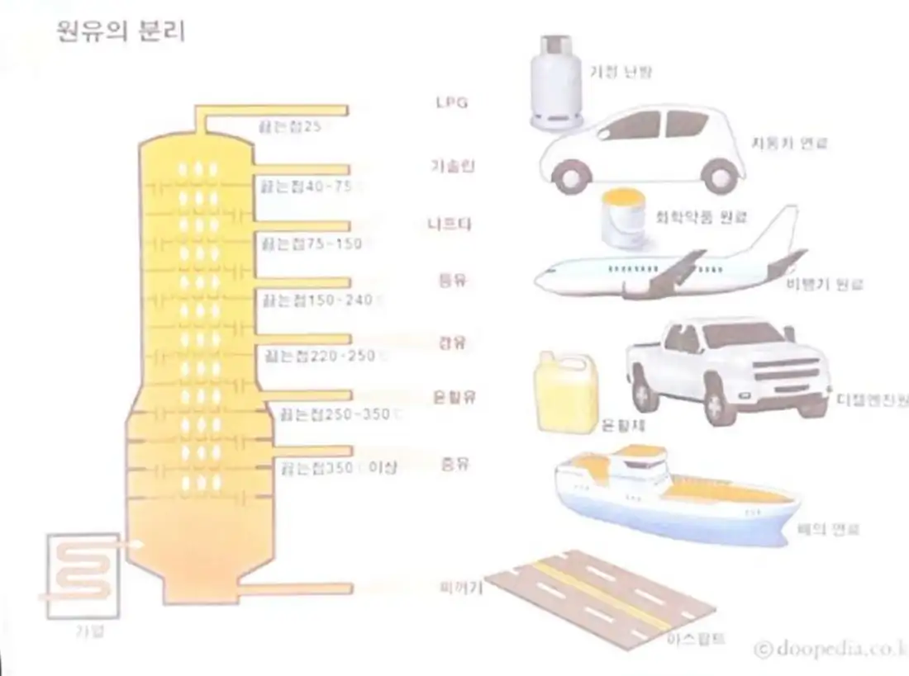
A. 가스터빈기관 연료의 구비조건
- 증기압이 낮을 것 — 상승률이 크고 고고도에서 기압이 낮아져 Vapor lock 위험이 항상 존재. 연료 휘발성 때문에 발생
- 빙점이 낮을 것 — 대기 온도 −56.5℃인 고공에서도 얼지 않아야 한다. → 연료 중 성분이나 용해수분이 동결해서 필터·통로를 막거나 점도가 증가해 연료 흐름이 불균일해질 수 있다. 연료 중에 녹아 들어간 수분 → 얘네가 얼면 필터 같은 걸 차단
- 인화점이 높을 것 — 사고 등 화재발생 방지
- 대량생산 가능하고 가격이 저렴할 것 — 왕복기관에 비해 출력이 커 소비량이 많다
- 발열량이 크고 부식성이 없을 것 — 단위 중량·체적당 발열량이 클수록 적은 탑재 연료로 비행. 수분·산소·유황 화합물이 녹·마모·부식을 일으키지 않아야 한다
- 점성이 낮고 깨끗하며 균질할 것
- 발화점이 높을 것 — 자연 자기 발화점. 가열 시 자연히 발화되는 온도로, 높을수록 안정성이 높다
- 전기 전도도가 높을 것 — 고속으로 파이프·필터를 흐르면 정전기 발생. 일정시간이 지나면 항공기 Earth를 통해 지상으로 방출. 전도도가 높을수록 정전기 축적이 적고, 정전기 방지제를 첨가해 전도도를 높이기도 한다
Vapor lock 정리
원인: 낮은 압력 / 높은 온도 / 불규칙적인 흐름 슬라이드
고도↑ → 압력↓ → 증기화가 빨리 일어남. 원인: 연료의 기화성, 고 증기압
B. 연료 선택 시 고려사항
가. 연료의 이용도
기관성능(연소실 효율, 고도한계, RPM, 찌꺼기, 고공 재시동 특성) / 계통 내의 증기, 액체손실, 증기폐쇄, 청결성 등
나. 연료의 증기압과 연료 압
- 연료 증기압: 연료의 고유 값으로 연료가 증기화되는 압력 ⇒ 고도와 무관
- 연료 압: 연료 유면 위를 누르는 공기의 무게에 의한 압력 ⇒ 고도에 따라 변화
다. 제트 연료의 첨가제
| 첨가제 | 역할 |
|---|---|
| 산화방지제 Anti-Oxidant | 연료가 변질하여 검(용해·불용해 산화물)을 생성, 산화를 방지 |
| 금속 불활성제 Metal De-activator | 부유 금속(특히 동 및 동 화합물)을 불활성화 연료가 금속에 반응하지 않게끔 |
| 부식 방지제 Corrosion Inhibitor | 녹이나 부식 발생 방지 |
| 빙결 방지제 Anti-Icing Additive | 수분 중에 녹아 빙결 온도를 낮추고 저온에서의 연료 동결을 방지 |
| 정전기 방지제 Anti-Static / Electrical Conductivity Additive | 고속으로 흐를 때 발생하는 정전기의 축전을 방지 |
| 미생물 살균제 Microbicide | 박테리아가 증식하지 못하도록 살균 |
C. 연료의 종류
가. 개요
- 제트 연료는 케로신 계의 연료로서 탄화수소의 화합물이며, 가솔린보다 탄소와 유황 성분이 많다.
- 주성분: 파라핀과 나프텐(가솔린) / 부성분: 방향족과 올레핀, 그리고 유황과 불순물
- ☞ 방향족: 연소 시 검은 연기·그을음, 고무 가스켓을 부풀게 함 / 올레핀: 저장 중 산화 변질되어 검 형성 / 유황: 연소 시 유산을 만들어 금속을 심하게 부식
나. 제트연료의 규격
- 민간규격: ASTM (American Society for Testing Material) — 엔진·항공기 제작사, 항공사, 국제기관 등
- 군용규격: 미군규격 MIL-T-5624
다. 종류
민간용
- Jet A-1: 케로신 계(kerosene). 휘발성이 낮고 인화점이 높음. 세계적으로 가장 많이 사용 → 국제선에 주로 사용
- Jet A: 빙점이 −40℃(−40℉)로 높다는 것 외에는 Jet A-1과 같다
- Jet B: 와이드-컷 계(저증기압 가솔린). 케로신계보다 비중이 가볍고 저온·고공에서 착화성 우수 (주로 군용)
군용
- JP-1: 가장 처음 사용된 군용 제트 연료
- JP-2: JP-1보다 만들기 쉬웠으나 어는점이 더 높아 추위에 불리
- JP-3: 등유+가솔린+디젤, 원유의 50%로 생산성↑·저렴. 휘발성이 강해 사용 중단
- JP-4: 와이드-컷 계, Jet B에 상당. 군용으로 가장 많이 사용
- JP-5: 케로신 계, Jet A-1에 상당. 인화점을 높여 항공모함 화재 사고를 줄이려고 사용(벙커탱크용) → 거의 대부분의 군함 인화점 = 불이 옮겨붙는 온도. 항공모함 → 인화점 높아야 함, 불이 잘 붙으면 안 되니까
- JP-6: XB-70 발키리용. 저휘발성·저빙점, 인화점 높음
- JP-7: SR-71 블랙버드용. 인화점 높음
- JP-8: Jet A-1과 비슷하며 현재 널리 사용 → GTG 등 일부 지상장비에도 사용
- AV Gas Aviation Gasoline: 비상용 연료로만 사용 → 왕복엔진에 주로 사용 휘발유 + 첨가제
Ref. 항공용 연료의 정리 (AVGAS)
- 항공연료는 AVGAS(항공용 가솔린, 왕복엔진)와 터빈연료(JET A 등) 2가지.
- 왕복엔진 연료 등급: 80/87, 100/130, 100LL(Low Lead). 네 번째 등급 115/145는 대형 왕복엔진 항공기에서 제한적으로 사용.
- ☞ 2개의 숫자는 옥탄가로서 희박혼합(lean)과 농후혼합(rich)의 등급지수.
- 터빈연료: 케로신이 주성분인 JET-A, JET A-1, 케로신에 항공용 가솔린이 첨가된 JET B.
표준연료(탄화수소계) = 이소옥탄 + 정헵탄 · 이소옥탄: 안티노크성이 강함 · 정헵탄: 노킹을 잘 일으킴
115/145 → 이소옥탄 100으로도 부족한 고출력 엔진, 납이 첨가됨
| AVGAS 등급 | 옥탄가 | 납 (g/L) | 색 | 비고 |
|---|---|---|---|---|
| 100LL | 100 | 0.56 | 옅은 파란색 | 가장 많이 사용 |
| 100/130 | 100 / 130 | 1.12 | 청록색 | 100LL으로 대체 중. 미국 일부 주·호주·뉴질랜드·칠레 등에서만 |
| 91/96 | 91 / 96 | 0.02 | 갈색 | 군용 |
| 91UL/96UL | — | 없음 | 무색 투명 | 2010년 생산 중단 |
| 85UL | 85 | 없음 | 무색 투명 | 2013년 생산 중단 |
| 82UL | 82 | 없음 | 보라색 | 2008년 생산 중단 |
| 80/87 | 80 / 87 | 0.14 | 붉은색 | |
| 115/145 | — | — | 보라색 | 군용 / 단종 |
| Fuel Type & Grade | Color of Fuel | 장비·배관 식별색 |
|---|---|---|
| AVGAS 82UL | Purple | 보라 |
| AVGAS 100 | Green | 초록 |
| AVGAS 100LL | Blue | 파랑 |
| JET A | Colorless or straw | 검정(회갈) |
| JET A-1 | Colorless or straw | 회색 |
| JET B | Colorless or straw | 노랑 |
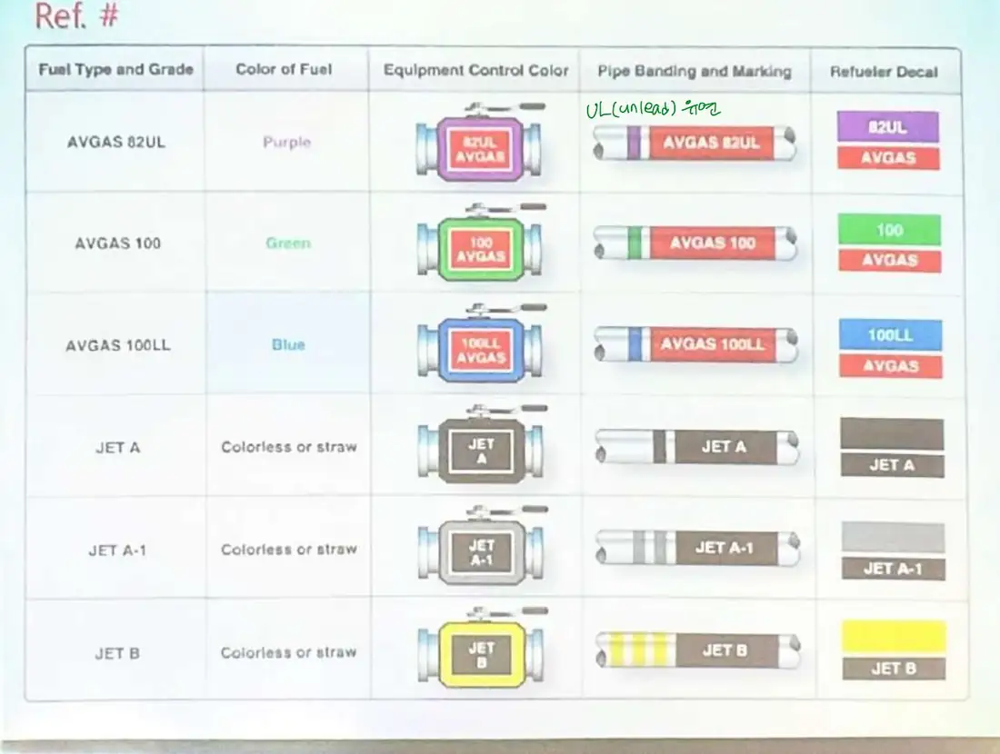
연료 주입 · 탱크 · 탑재 연료
★ 연료주입 (Static Electricity) — 접지 순서
- Ground the Truck
- Connect the Truck to the A/C
- Connect (Ground / 3-Point ground) the Hose Wire to the A/C
- Connect the Hose to the Tank
- 오버 윙 방식(over-wing method) / 대형 항공기의 단일 포인트 급유(Single point refueling station) receptacle — 한 point에서 모든 탱크에 연료 공급
- A330 MRTT 탱크 배치: Centre tank / Inner tank / Outer tank / Vent tank / Trim tank(수평꼬리날개)
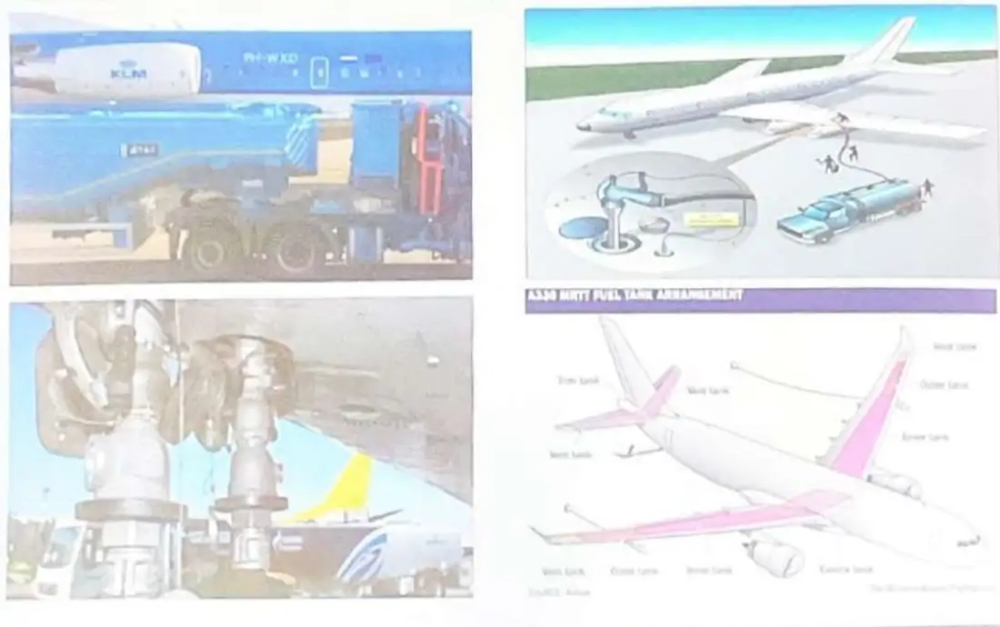
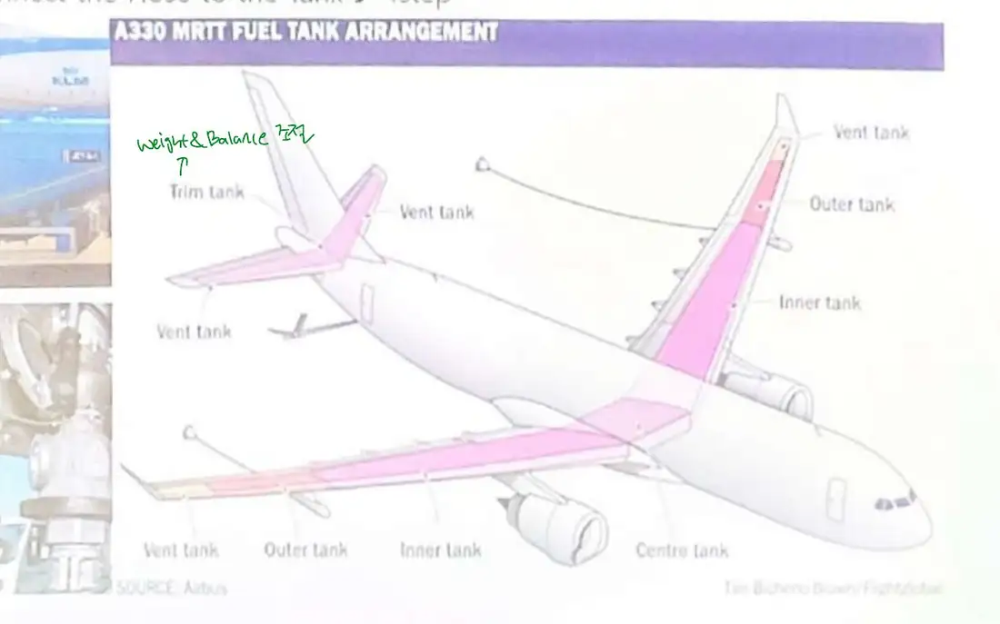
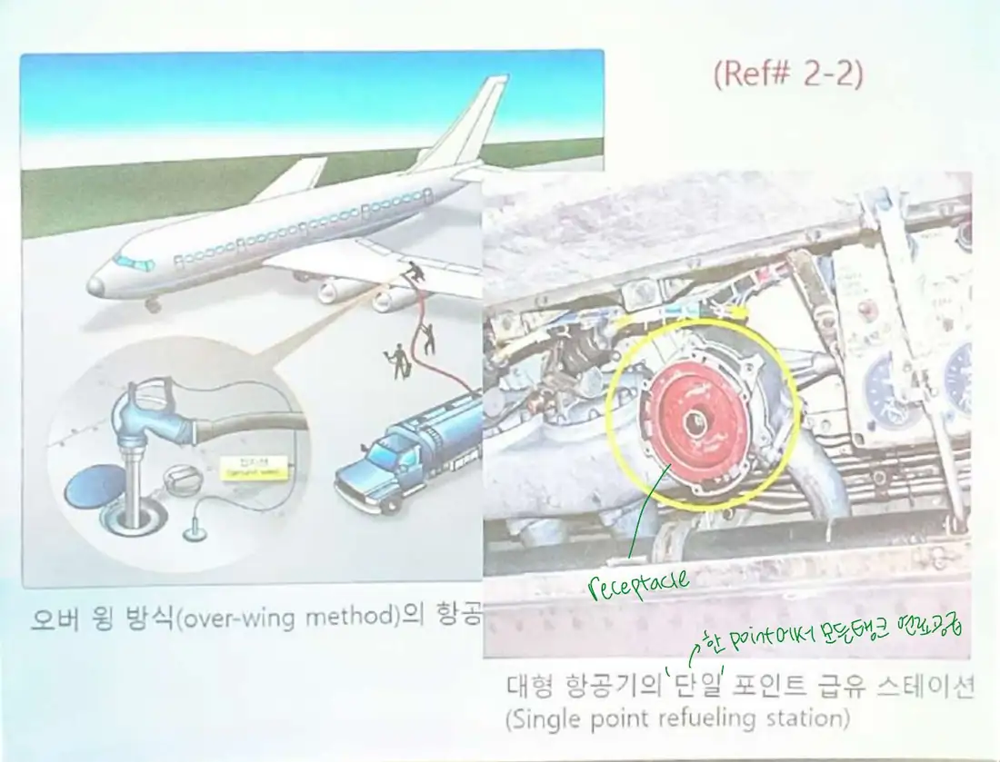
BLOCK FUEL — 비행기에 싣는 전체 연료
법정연료: TAXI · TRIP · CONTINGENCY · ALTERNATE · FINAL RESERVE
추가연료(EXTRA FUEL): COMPANY EXTRA · DISCRETIONARY · TANKERING
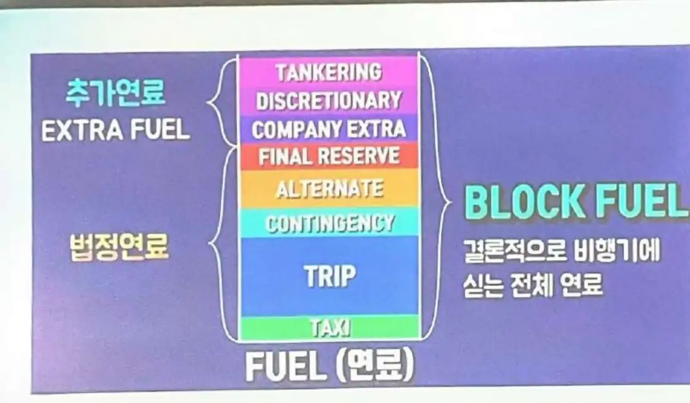
연료계통D. Fuel System
가. 개요
- 터빈 기관의 출력은 조종사의 Power lever 조작에 의해 공급 연료의 유량을 조절함으로써 조정된다.
- 연료계통은 기체 연료계통과 기관 연료계통으로 나뉜다.
기체 연료계통
기관 연료계통
★ Booster Pump
- Tank 내에 잠겨져 있는 Centrifugal Type Pump 가변용량형
- Tank와 EDP 간 Positive(+) 압력 제공 = Cavitation 방지 EDP까지 보내준다
- 시동 시 적정 압력 제공 및 비행 시 Vapor Lock 발생 가능성 방지
- EDP의 Back up 기능
- Cross Feeding 시 연료 이송 압력 제공
- 연료 Dump 시 연료를 가압
정용량형은 반드시 relief valve가 있어야 함
계통도(Ref.)에 적은 필기
· 차단 밸브 = Shutoff & Selector V/V → tank 여러 개 중 어떤 탱크를 쓸 건지 선택
· 연료 펌프 = 원심식 / 연료 압력 펌프 = EDP, 기어 타입
· 공기-연료 가열기 — bleed air에 의해 연료를 살짝 데워서 결빙 제거
· 연료 조정 장치 = FCU · 추력 증가 감지는 CIT(온도)로 측정해 판단
· 연료 유량 측정기 = FFX (Fuel Flow Transmitter) → 단위 PPH
· 연료-윤활유 냉각기 → oil 온도 측정 센서 있음
· 여압 및 드레인 밸브 → 1차·2차 연료로 분배
· 노즐 → 1차: (시동 시) 점화 용이하게, 150° / 2차: 50° 좁은 각도. 대부분의 연료가 나와 연소를 용이하게 해줌. 연료가 벽에 닿지 않게.
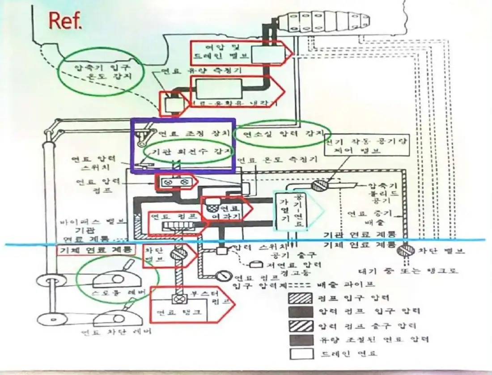
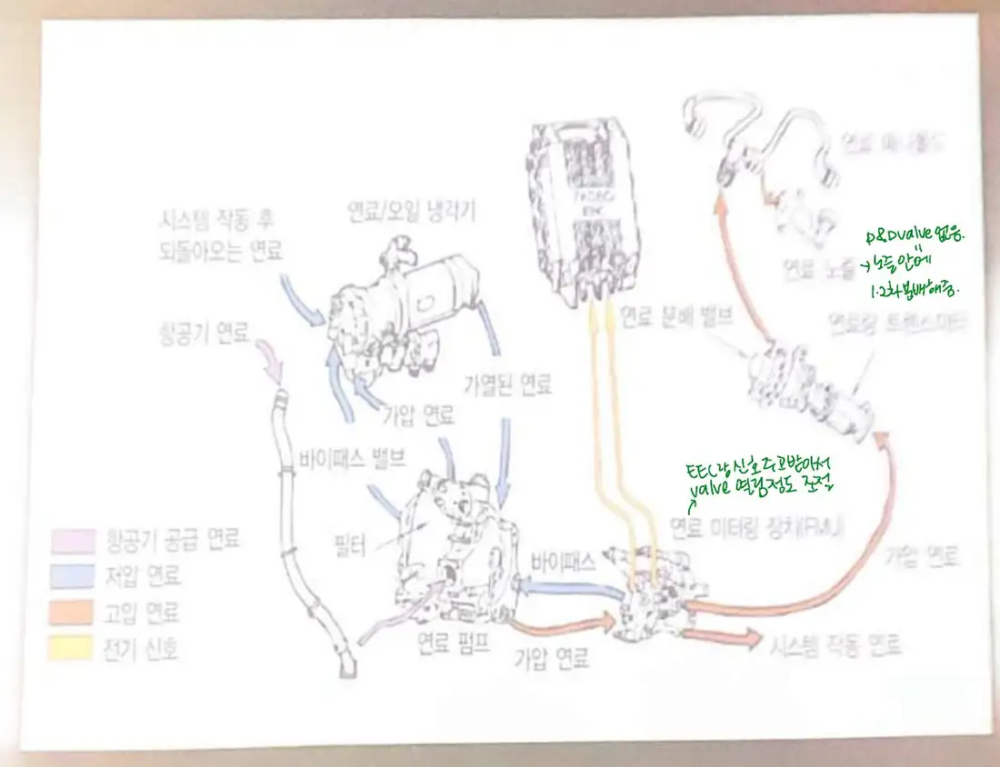
나. 기관 연료 계통의 구성
1) 주 연료 펌프
- 종류: 원심형, 기어형, 피스톤형 Ref. 그림에 있는 것들(Gear · Vane · Piston · Centrifugal) + 지로터 타입
- 목적: 출력에 맞는 적당한 압력으로 연료 공급 / G/B에 부착 구동
- 정용량식(Constant Displacement) → 기어형 / 가변용량식(Non-constant) → 원심식
- 기어펌프 단면의 부스터 단: 원심식, 저압
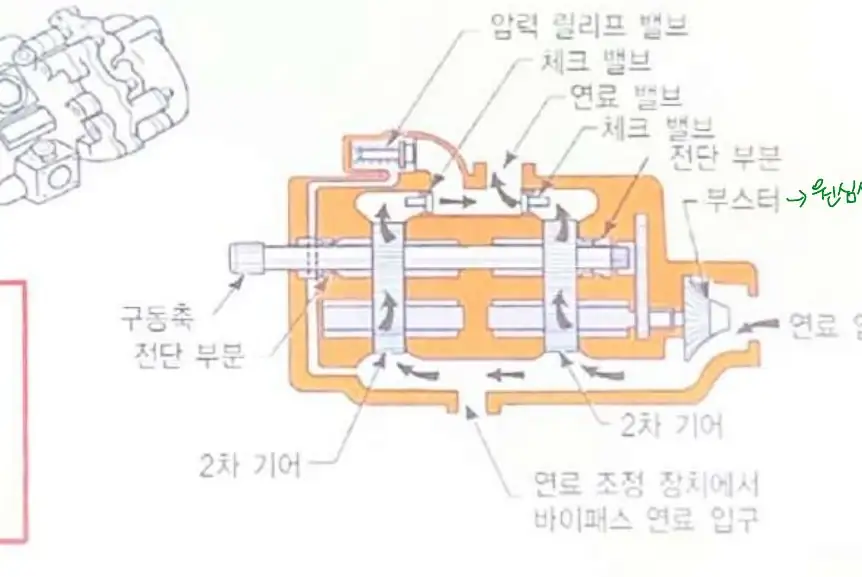
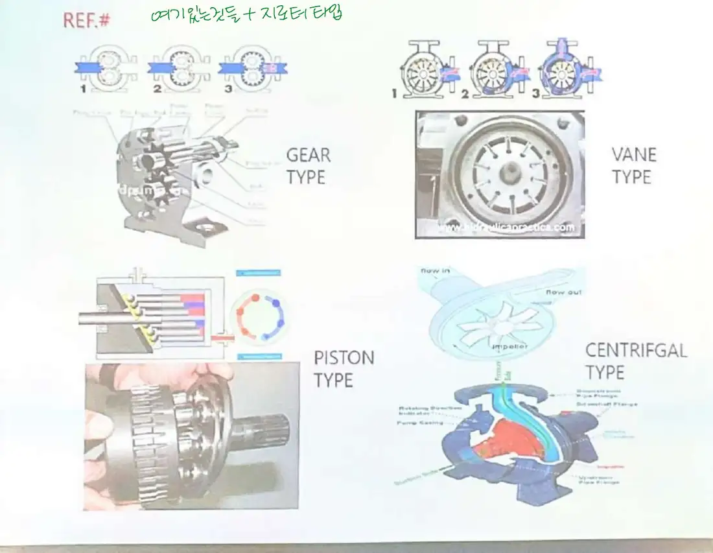
☞ 펌프 내에 있는 밸브
- Check V/V: 연료가 역류 방지
- Relief V/V: 펌프 출구 압력이 규정값 이상으로 높아지면 펌프 입구로 되돌려 압력 조정
- 바이패스 V/V: 연료 조정 장치에서 사용하고 남은 연료를 다시 펌프 입구 쪽으로 되돌려 보낸다
2) 연료 여과기 Fuel filter
① 위치
- 저압 필터: 엔진 구동 연료펌프와 제어장치 보호 — 공급탱크와 엔진연료계통 사이
- 고압 필터: 저압펌프로부터 올 수 있는 오염에 대해 FCU 보호 — 연료펌프와 연료조정장치 사이
- ☞ Pressure switch: 각 Strainer 앞뒤에 결빙이나 막힘을 알려 줌 / By-Pass Valve: 여과기가 막힐 때 연료 공급
② 종류(형식)
| 형식 | 특징 |
|---|---|
| 미크론 필터 / Cartridge Type | 가장 큰 여과작용. 다공성 섬유소(Porous Cellulose) 재질로 10~25 미크론 이물질 제거. 1 미크론 = 1/1000 mm |
| 스크린 망사 필터 / Screen Type = strainer, 재사용 가능 | 200-mesh~35-mesh, 연료펌프와 FCU 사이에서 사용. 고운-메시 강철 와이어를 연속적으로 겹친 층. → 가장 널리 사용 |
| 웨이퍼 스크린형 / Screen-Disc Type | 청동·황동·철 스크린 원반을 겹쳐 만들어 요소 교체 가능. 미세 입자 제거 + 고압에 잘 견디는 강도 |
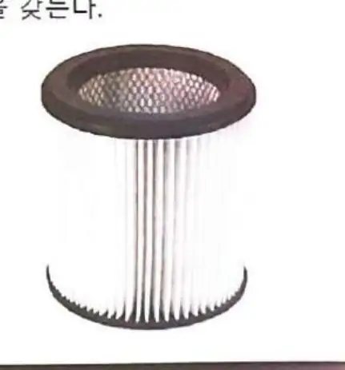
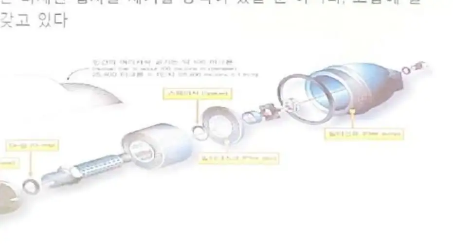
3) 연료 조정 장치 → 별도 챕터
4) 연료 히터 / 연료-오일 냉각기 Fuel Heater · F/O Heat Exchanger
- 목적: 연료 방빙을 위해 Comp' Bleed Air에 의해 가열되고 Thermostatic Valve(Temp Sensor)에 의해 By-Pass되거나 heater 된다.
- 현대 항공기는 주로 Fuel-Oil Cooler에 의해 가열되며 heat exchanger라 불린다.
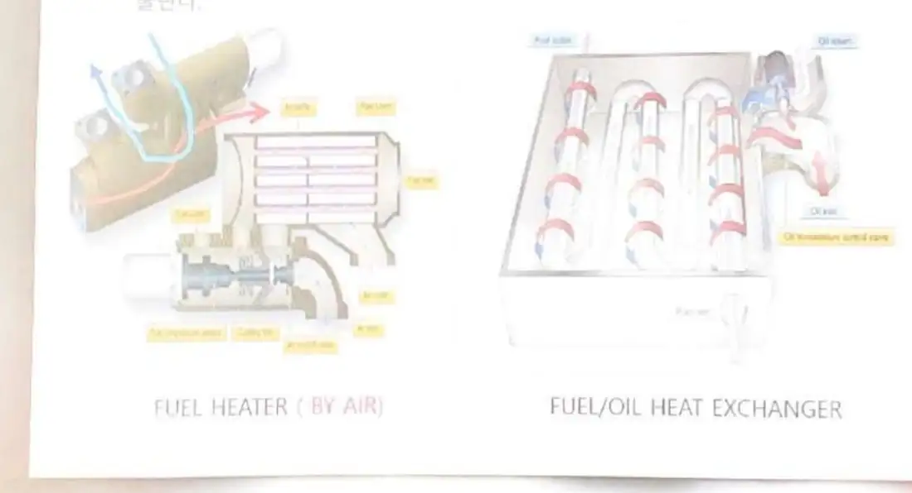
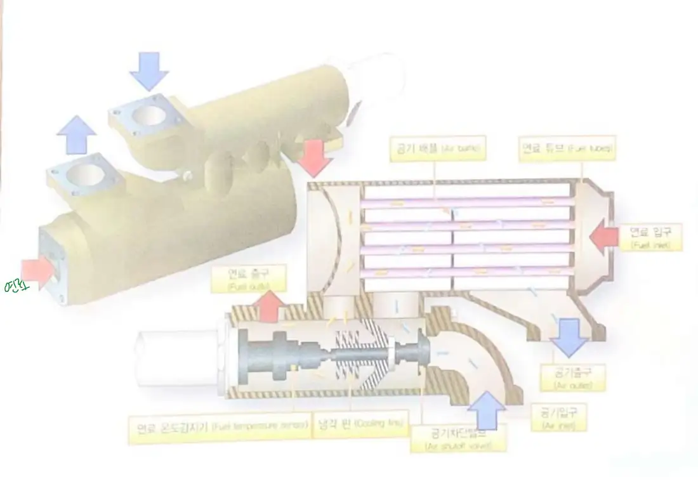
5) 여압 및 드레인 밸브 Pressurizing & Drain V/V (P&D) · Flow divider와 Drip V/V
- 위치: 연료 조정장치와 연료 매니폴드 사이
- 목적 ① 연료의 흐름을 1, 2차로 분리 ② 일정 압력이 될 때까지 연료 흐름 차단(과열 시동 방지) ③ 엔진 정지 시 매니폴드·노즐에 남은 연료를 배출
- 흐름분할기(Flow divider)는 본질적으로 여압 밸브와 같은 기능을 수행
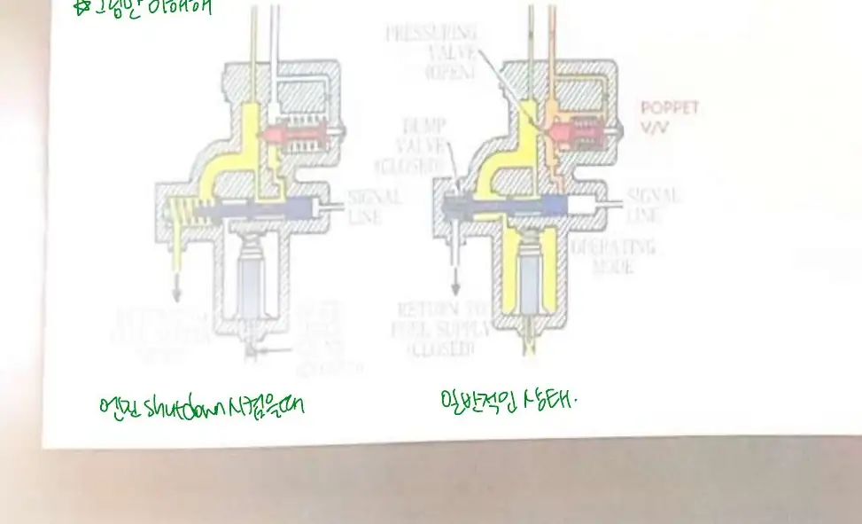
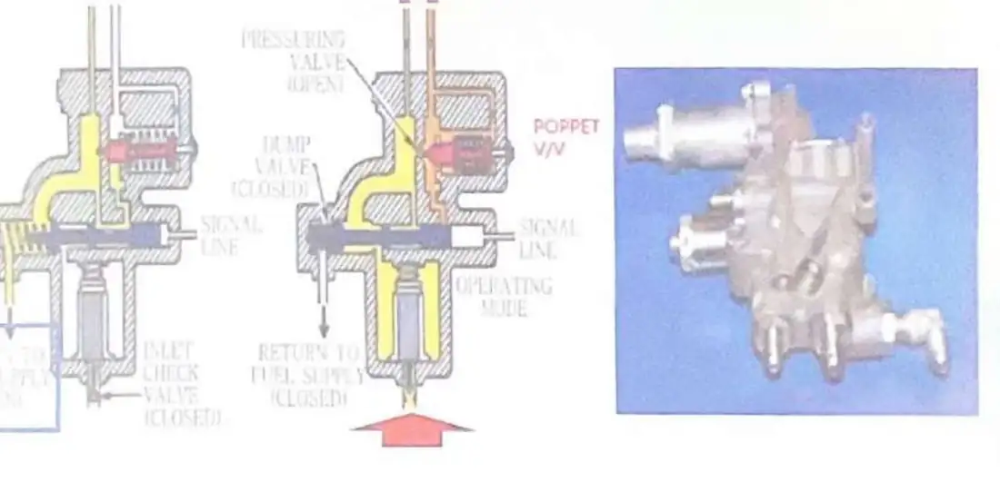
❖ Fuel Drain의 필요성과 작동
- Drain Valve: 연료가 축적되면 문제를 일으키기 쉬운 구성품에서 연료를 배출시키는 장치 — 연소실에 고인 연료로 인한 화재 위험 / 매니폴드·노즐에서 증발 후 남는 납과 고무 찌꺼기
- 매니폴드는 드립(Drip) 또는 덤프 밸브(Dump Valve)로 드레인 → 압력 차이나 솔레노이드로 작동
- 연소실 드레인 밸브: 엔진 정지 후 또는 시동 실패 시 고인 연료를 드레인
- 캔형(Can-type): Flame Tube를 통해 중력으로 아래쪽 챔버에 모여 드레인 / 애눌러형(Annular-type): 라이너의 공기 구멍으로 흘러 하우징 바닥에 고임
- 연소실 내 압력이 대기압 수준으로 떨어지면 스프링에 의해 밸브가 열려 드레인
6) 연료 매니폴드 Fuel manifold
- P&D V/V를 거쳐 나온 연료를 각 노즐로 분배 공급
- 종류: 분리형과 동심 이중 파이프형, 또 내부형과 외부형
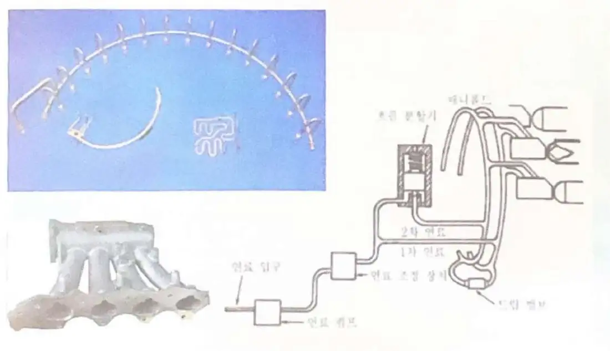
7) 연료 노즐 Fuel Nozzle
- 위치: Frame 내 연소실 전방 / 목적: 빠르고 확실한 연소가 되도록 미세하게 분무
- 증발식(Vaporizing Tube Type): 1차 공기와 함께 증발관을 통과하며 연소 열에 의해 증발되어 혼합가스가 됨
- 분무식(Atomizer Type): 고압에 의해 분사
- 단식노즐(Simplex): 구조는 간단하나 대형엔 불가능
- 복식노즐(Duplex): 1차 연료 — 노즐 중심의 작은 오리피스에서 150° 각도로 넓게 분사 / 2차 연료 — 큰 오리피스에서 50° 각도로 좁고 멀리 분사, 균등한 연소 가능
생략 20개 노즐 분사패턴 슬라이드(15 psig에서 1차 64°/89°, 120 psig에서 2차 125°, 넓은 분사각 노즐 4개가 점화 플러그 양쪽)는 필기에 "생략" 표시.
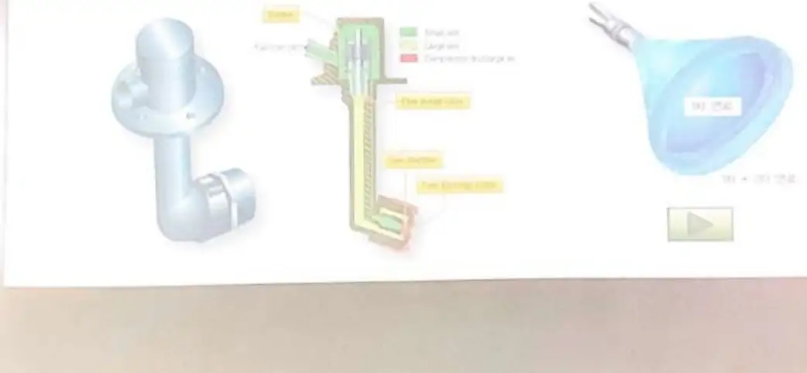
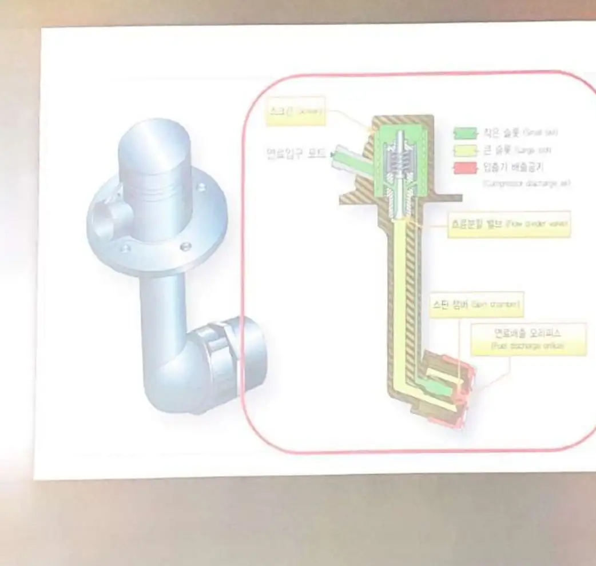
FADEC 엔진 연료 계통도 필기
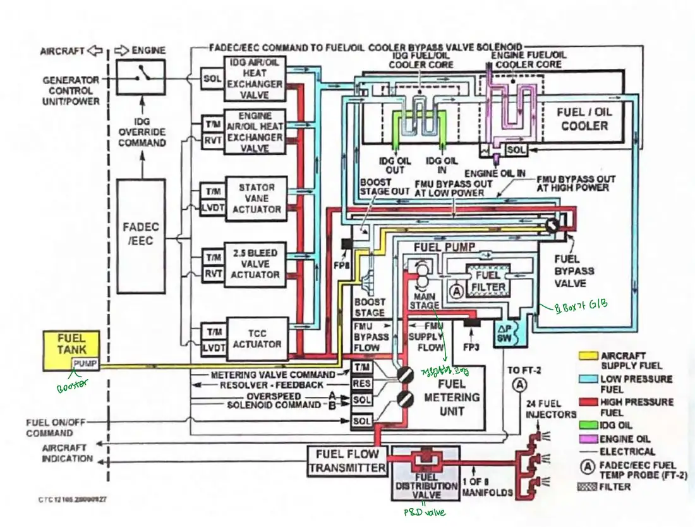
연료 조정 장치Fuel Control Unit · HMU · FADEC (9주차)
목적과 구성
목적: 기관의 모든 작동조건에 대응하여 공급되는 연료유량을 적절하게 자동제어. PLA가 일단 설정되면 대기상태 변화(특히 CIT)에 관계없이 자동으로 연료량을 제어하고 PLA에 상당하는 RPM(or TIT)을 일정하게 유지.
수감 부분 Computing Section
기관의 작동상태를 수감, 신호를 종합 계산하여 유량조절부분으로 보낸다.
- RPM: 속도감지 (조속기에 의해)
- CDP: 터빈 입구 온도와 관련 (CCP / Pb도 가능)
- CIT: 밀도와 관련 (CIP도 가능)
- PLA: 조종사의 조종 T/A
유량조절부분 Metering Section
수감부분의 계산된 신호를 받아 작동한계에 맞도록 연료량을 조절 (필요량만 공급 후 나머지는 PUMP 입구로 되돌아감)
수감요소에 따른 연료량 조절
- PLA, RPM — 스로틀 레버 각도가 커지면 연료를 늘리라는 신호. 마냥 늘리면 과농후로 인한 연소정지나 압축기 실속 → RPM을 고려해 적정범위까지만 증가.
- CDP — 압축기 출구 압력이 높을 때 연료가 많이 공급되면 터빈 입구에서 가스 누적으로 압축기 실속 위험 → 압축기 출구 압력이 증가하면 연료량은 적어져야 한다.
- CIT — 압축기 입구 온도가 증가하면 터빈 입구 온도가 증가하므로 연료유량을 감소시킨다.
Detail View — 연료 조절 장치의 작동선 (가로: 회전수 / 세로: 연료유량)
- 위쪽 빗금 영역: 과농후 연소 정지 · 실속 / 아래쪽 빗금 영역: 과희박 연소 정지
- 시동 A→B→C · 급가속 C→D→E · 급감속 E→F→G · 가운데 곡선 = 정상 작동선
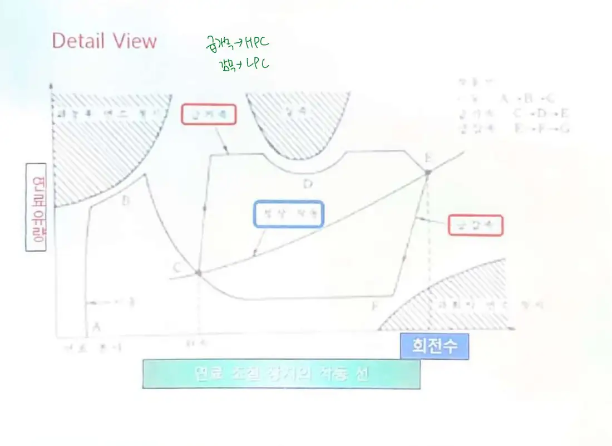
연료 조정 장치의 종류
① 유압-기계식 hydro-mechanical HMU
- 수많은 엔진에 사용되었고 아직도 사용되지만, 전자식 제어 방식이 제공되면서 사용이 한정되고 있다.
- 수감 계산 부분과 유량 조절 부분의 2개 부분으로 구성.
- 순수한 유압 기계식은 전자 장치 없이 기어 장치를 구동시켜 RPM을 감지.
- 감지되는 다른 변수: 압축기 출구 압력(CDP), 연소실 압력(Burner Pressure), 흡기 온도와 입구 압력(CIT & CIP).
- 수감부가 연료 유량을 결정하면 유량 조절부는 캠과 서보 밸브를 통해 연료를 공급.
- 실제 작동 절차는 매우 복잡하고 계량이 전자식만큼 정확하지 못하다.
- ☞ 전자식 조정 장치는 더 정밀하게 더 많은 입력 자료를 받을 수 있어, 초기에는 유압기계식에 전자식 장비를 추가했다. → 전자식 장비 고장 시 유압 기계식을 대체 활용.
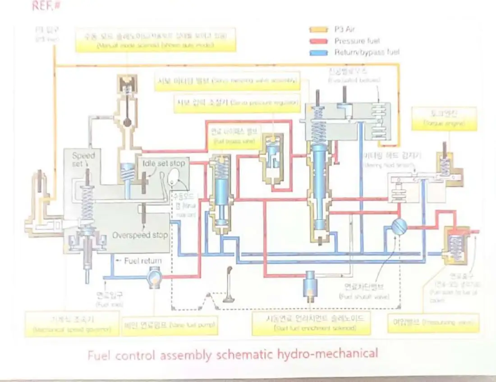
② 전자식 통합 엔진제어장치 FADEC — Full Authority Digital Engine Control
- 가장 최신의 터빈엔진에서 연료유량을 제어하기 위해 개발.
- 전자식 엔진제어장치(EEC)로 엔진 변수 정보를 공급하는 전자적인 신호를 이용.
- 진정한 FADEC은 유압 기계식 백업(Hydro mechanical Backup)을 갖고 있지 않다.
- EEC는 연료 흐름량 결정에 필요한 정보를 모아 연료조절밸브로 전송, 밸브는 명령에 단순히 반응. EEC = 연료분배계통의 계산장치(컴퓨터), 조절밸브 = 연료유량 조절.
- 작은 APU부터 가장 큰 추진력의 엔진까지 수많은 터빈엔진에 사용.
EEC 세부
- FADEC의 수감 계산 부분은 전적으로 감지기 입력 자료에 의존해 EEC가 연료량을 계량 → EEC는 FADEC 연료 조정 계통의 1차 구성요소
- EEC 동력: 항공기 전기 계통 또는 영구자석 교류발전기(PMA, Permanent Magnet Alternator)
- 색깔 표시(Color Coding): 채널 A 전선 = 청색, 채널 B 감지기 신호 = 녹색, EEC 회로가 아닌 전선 = 회색, 열전쌍 신호 = 노란색
· 채널 A, B로 나뉘어져 있다. 정상일 땐 2개가 서로 공유, fail-safe 구조
· EEC 커넥터 = receptacle · "QEC =" 표시가 'EEC 회로가 아닌 전선' 옆에 적혀 있음
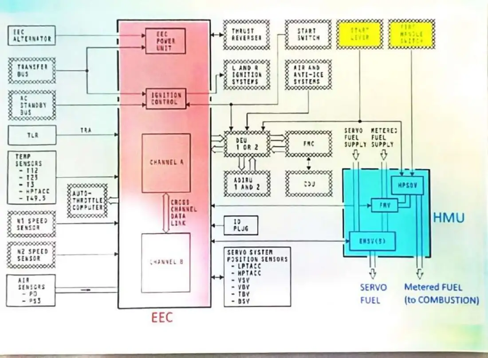
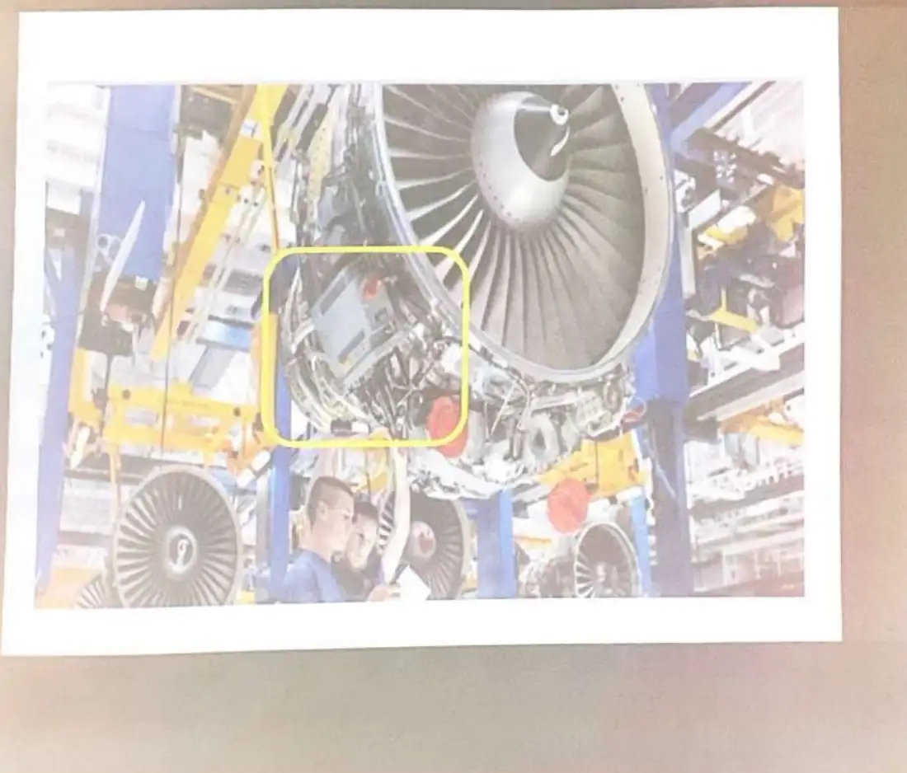
FADEC 연료 흐름 (그림 필기)
· 이 계통에는 P&D valve 없음 → 노즐 안에서 1·2차 분배
· AMM 73-00-00 HYDRAULIC SUBSYSTEM: Tank pump → Fuel pump → Filter(여기까지 gearbox에 붙어있음) → FMU(G/B 옆) → Fuel Distribution Valve (= P&D valve) → Injectors. FMU의 servo fuel이 Stator Vane Actuator, Turb Case Cool Actuator, Air/Oil Heat Exchanger, 2.5 Bleed Valve Actuator 등을 구동
EEC 블록도: 입력(TLR/TRA, T12·T25·T3·T49.5, N1·N2 speed, P0·PS3) → EEC Channel A / B (Cross Channel Data Link) → HMU(FMV, HPSOV, EHSV) → Servo Fuel / Metered Fuel(to Combustion)
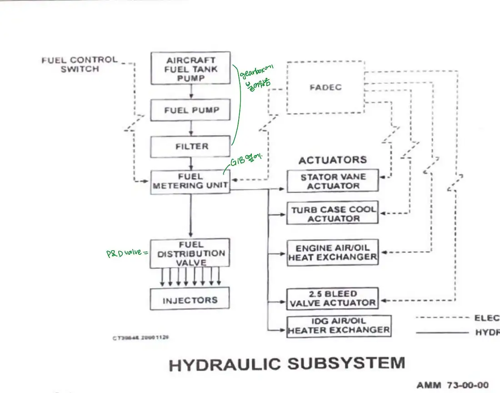
학습문제풀이 — FUEL슬라이드에 실린 문제 · 클릭하면 답이 열립니다
답 표시 — 슬라이드에는 정답이 인쇄되어 있지 않아요. 필기 PDF에 직접 표시된 답 · 정리 강의 내용을 근거로 고른 답(교수님 답과 다를 수 있음)
다음 중에서 제트 엔진 연료의 구비조건이 아닌 것은?- 발열량이 클 것
- 저온에서 동결되지 않을 것
- 부식성이 없을 것
- 휘발성이 높을 것
군용 가스 터빈 연료 규격 중 민간 규격 JET-B와 유사한 연료는?- JP-4
- JP-5
- JP-7
- GP-4
JET A-1 연료가 사용되는 곳은?- 고 고도 비행
- 저 고도 비행
- 온도가 낮은 곳
- 온도가 높은 곳
제트 엔진에서 부스터 펌프의 형식은 무엇인가?- 원심 식
- 베인 식
- 기어 식
- 지로터 식
연료 펌프의 과도한 압력은 어디로 돌아가는가?- 탱크 입구
- 펌프 입구
- 외부로 배출
- 펌프 출구
연료노즐의 분사각도를 옳게 설명한 것은?- 1차 연료보다 2차 연료의 분사각도가 더 넓게 분사된다.
- 각도는 1차와 2차가 같고 압력은 2차 연료가 더 높다.
- 1차 연료보다 2차 연료의 분사온도가 높아 균등한 연소를 이룬다.
- 1차 연료 분사각도는 2차 연료 분사보다 더 넓게 분사된다.
모든 비행상태에서 조종사 요구에 부응하여 최적의 엔진 조정을 수행하기 위하여 입력 신호를 전산 처리하여 작동 부분품을 일괄 조정하는 것은?- EEC
- FCU
- carburetor
- autopilot
다음 중 고압의 연료계통용으로 적합한 연료 필터의 형식은?- 스크린 형
- 디스크 형
- 스크린 디스크 형
- 다 맞다
FUEL/OIL 열 교환기(heat exchange)란 무엇인가? (서술)
윤활유4-2. Gas Turbine Engine OIL System (PART 6.1~6.9)
오일계통의 주요 목적은 엔진 베어링부의 윤활과 냉각 → 윤활 오일계통이라고도 하며 모두 압력 공급 방식. 제트엔진: Main Bearing 및 보기류 구동 기어박스 내 베어링의 윤활·냉각. 터보프롭·터보샤프트: 이외에 프로펠러 축 감속장치 윤활과 Torque미터 작동 등.
A. 윤활 Lubrication
- 윤활대상: ① 압축기와 터빈을 지지하는 주 베어링들 ② 액세서리를 구동하는 구동기어들과 그 축의 베어링들
- 윤활 방법: 고압 분무식(Pressure Spray)
- 윤활 목적: ① 윤활 작용 — 마찰과 마멸 감소 ② 냉각 작용 — 고온부의 마찰열 흡수
B. 윤활유
가. 가스터빈 엔진 오일의 구비 조건
- 점도와 유동점이 낮을 것 (−56~250℃) — 높은 점도는 Load Carrying Ability가 우수하지만 유동성이 중요
- 점도지수(온도에 의한 점도변화)가 높을 것
- 공기와 윤활유의 분리성이 좋을 것 (거품 저항성이 클 것)
- 양호한 유성(Oiliness)을 가질 것
- 산화 안정성이 클 것 (부식 및 침전물 형성 최소)
- 내열성이 우수할 것 (고속, 고하중)
- 인화점이 높을 것 — 고고도에 따른 저휘발성도 필요
| 용어 | 뜻 |
|---|---|
| 인화점 Flash Point | 가열된 오일 표면에 가연성 증기가 생성되어 불이 붙을 수 있는 최저 온도. 고온에서 작동하므로 높은 인화점을 가져야 한다. 불이 옮겨붙는 온도. 높은 게 좋음 |
| 발화점 Fire Point | 증기가 계속해서 연소할 만큼 충분히 나오는 온도. 인화점보다 50~60℉(28~33℃) 더 높다. 오일에 연료가 희석되면 인화점·발화점이 낮아진다. |
| 유동점 Pour Point | 오일이 흐를 수 있는 가장 낮은 온도. 낮을수록 저온 시동 특성에 좋다. 온도에 영향을 받음 |
| 유성 Oiliness | 오일이 금속표면에 달라붙는 성질. 광물성 오일에는 유성 향상제를 첨가. 유성 = 금속과의 친화력 |
| 점도 Viscosity → 점도지수 | 유체의 끈끈함, 흐름 저항. 점도가 낮으면 유동이 자유롭고 높으면 느리다. 고온 시 높은 점도지수 필요 |
나. 종류
- 광물성 유: 초기에 사용. 원유의 정유과정에서 얻어 첨가제를 첨가하여 제조
- 합성유(Synthetic Lubricant) 합성유 = 에스테르(인공물) + 첨가제
합성유의 특징
- 높은 점도 지수 → 열 영향에 의한 작은 점도 변화
- 강한 Film strength → 표면에 붙어 있으려는 성질
- 광범위한 온도(−40℃~250℃)에서 사용 가능
- 침탄물(Coke Deposits) 형성을 최소로 유지
- 높은 인화점
- 낮은 유동점
- 고도 증기손실 방지를 위한 낮은 휘발성
- 거품 억제 특성
* 합성 오일의 장점: 고온에서 솔벤트를 증발시키지 않기 때문에, 솔벤트가 증발하면 남는 고체의 코크(Coke)나 락커(Lacquer)를 침전시키는 경향이 적다.
합성유의 종류
- Type Ⅰ: MIL-L-7808 — ~1960년대, 낮은 온도범위에서 사용(터보제트)
- Type Ⅱ: MIL-L-23699 — 1970년대~현재, 내열성 및 Anti-Coking 성질 개선. 예) ESSO/EXXON Turbo-Oil 2380 (PWA521) — 고온 작동 특성, Anti-Coking 특성, 낮은 작동범위(−45℉)
☞ 오일 첨가제(Additive): 용도에 따라 기본 성질에 없는 것을 보충하여 성능 향상 (다른 Type이나 제품을 혼합 사용 금지 → Skin을 통해 흡수, 높은 독성이 있음)
SOAP Spectrometric Oil Analysis Program — 분광식 오일 분석 프로그램
- 오일 시료를 분석하여 미세한 금속입자의 존재를 알아내는 방법
- 특정 물질의 PPM(백만 분율) 증가로 부분품의 마모나 엔진의 고장 판단
- 엔진이 고장 나기 전에 문제를 알아내므로 안전성 증대, 더 큰 결함 전에 알려줘 비용 절감 (터빈엔진/왕복엔진 둘 다 사용 가능)
전형적인 마모 금속과 첨가제 Typical Wear Metals and Additives
| 금속 | 지표 |
|---|---|
| 철 | 링, 축, 기어, 밸브 트레인, 실린더 벽, 피스톤의 마모 |
| 크롬 | 크롬 부분품(링, 라이너 등)과 냉각첨가제 |
| 니켈 | 마모의 이차적 지표 — 베어링, 축, 밸브, 밸브 가이드 |
| 알루미늄 | 피스톤, 로드 베어링, 부싱의 마모 |
| 납 | 테트라 에틸 납 오염 |
| 구리 | 베어링, 로커 암 부싱, 리스트 핀 부싱, 추력 와셔, 청동·황동 부품 |
| 주석 | 베어링 마모 |
| 은 | 은을 포함한 베어링의 마모, 오일 냉각기의 이차적 지표 |
| 티타늄 | 고품질 합금강으로 만든 기어나 베어링 |
| 몰리브덴 | 기어, 링의 마모, 오일 첨가제 |
| 인 | 녹 방지제, 점화플러그, 연소실 침전물 |
Ref. Engine Oil Analysis
- 샘플링 시 외부 오염물(no external contaminants)이 들어가지 않게 — 깨끗한 용기 사용
- 분석 종류: oil samples, oil filter analysis, chip detector analysis
- Oil sampling: 보통 엔진 정지 후 30분 이내(within 30 minutes of shutdown) 채취
윤활계통C. Lubrication System · D. 구성품
C. 윤활계통의 구성
| 계통 | 역할 | Components |
|---|---|---|
| Pressure Oil System | 인체의 동맥. 적절한 압력·온도의 오일을 정해진 위치에 공급 | Oil Tank / Main Oil pump / Main oil Filter & Last Oil Filter(Strainer) / Oil Pressure Regulator / Fuel Oil Cooler(Heat Exchanger) / Oil Tube & Oil Nozzle tank에 cooler가 없으니까(압력계통에 있으니까) Hot Tank |
| Scavenge Oil System | 인체의 정맥. 윤활·냉각을 끝낸 오일을 탱크로 되돌림 (Pressure System의 최소 두 배 용량) | Scavenge Pump / Oil Tube / MCD(Magnetic Chip Detector) scavenge 하단에 위치 |
| Breather System | 고도·상태 변화에 따른 적절한 오일 흐름과 완전한 Scavenge 기능 유지를 위해 Bearing Sump 압력을 대기압에 대하여 항상 일정한 차압으로 유지 | Breather & Vent Tube / Oil Separator(De-aerator, De-oiler) |
| Pressurizing (Bleed) | 압축기 Bleed 공기로 Sump를 가압하여 내부 윤활유의 누설 방지 | |
| Indicating System | 작동상태 지시 | Oil Pressure / Temperature / Quantity Indicator, Oil Low Pressure Warning Light, Oil Filter Clogging Warning Light 막혔을 때 |
Oil indicating system: 센서 → FADEC → EICAS → 조종실 계기 Display. No.3 bearing scavenge oil temperature probe → 엔진에서 온도가 높아 더 뜨거워서 별도로 측정
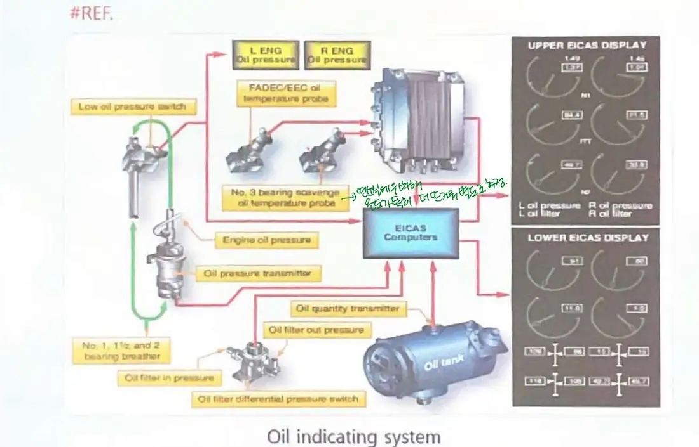
D. 윤활계통의 구성품
가. 오일 탱크 Oil Tank
- Wet Type: 소형 엔진에서 기어박스 내부 일부를 오일 탱크로 사용. APU·GPU에서 아직 볼 수 있으나 최근 항공기에서는 거의 없음
- Dry Type: 엔진 외형에 맞도록 제작하여 부착 — Pump Inlet보다 높은 곳에 위치 (gravity Flow를 위함) / Positive Flow of Oil / Pressure Build Up → 대기압보다 높게 유지
- 재질: 알루미늄합금 또는 스테인리스강
- 구성품: ① 공기 분리기(Air Separator) — 섬프에 들어온 공기를 대기 중으로 방출 ② Sump Vent Check Valve — 섬프 내 공기압력이 너무 높을 때 탱크로 방출 ③ 압력 조절 밸브 — 탱크 안의 압력이 너무 높을 때 대기 중으로 방출
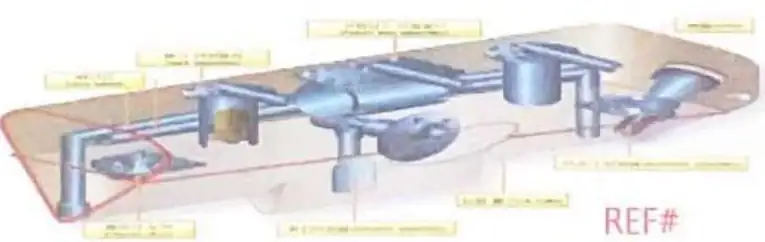
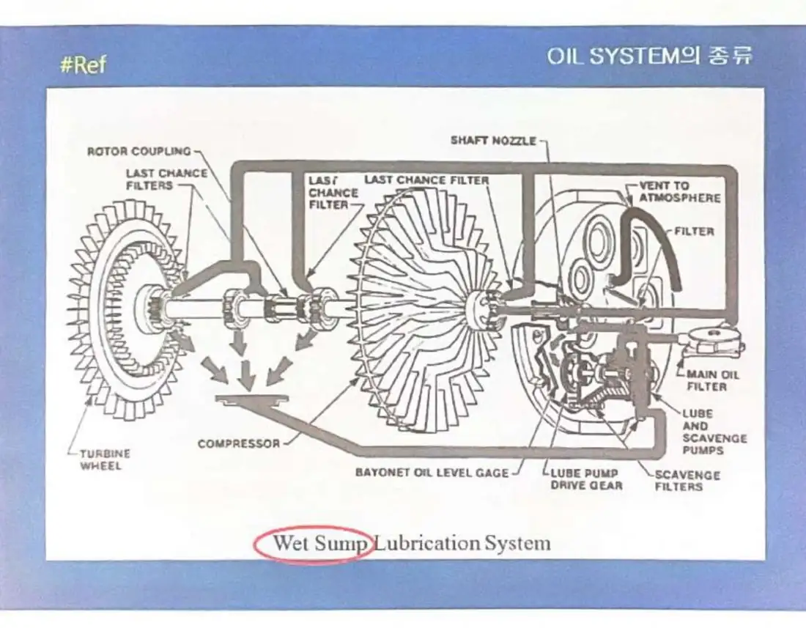
① 고온 탱크 Hot Tank
오일 냉각기가 압력계통에 위치 → 냉각기가 작다
- 압력부에서 오일에 포함된 공기의 양이 적어서 최대 열 교환이 발생
- 작은 냉각계통 사용이 가능해 무게를 절감
② 저온 탱크 Cold Tank
오일 냉각기가 소기계통에 위치 → 냉각기가 크다
- 탱크로 되돌아오는 오일이 냉각된 상태라는 장점
- 반면 오일은 공기를 갖게 되고 열 교환 능력이 떨어진다
☞ 걸핑 효과 gulfing effect
엔진 시동 후 오일 레벨이 떨어지는 현상. Sump로 많은 오일이 일시적으로 몰려 약 1갤런(4리터) 감소, 이륙 추력에서 추가로 0.5갤런 감소. 엔진 감속 시 부분적으로 회복되며 엔진이 정지되면 완전히 회복된다.
나. Lube & Scavenge Pump
- 오일 펌프는 윤활이 필요한 부품에 일정한 오일 압력을 공급
- 압력 윤활장치와 다수의 Scavenge 장치가 하나의 하우징 안에 구성, Pressure Relief v/v가 있어 압력이 높을 때 펌프 입구로 되돌린다
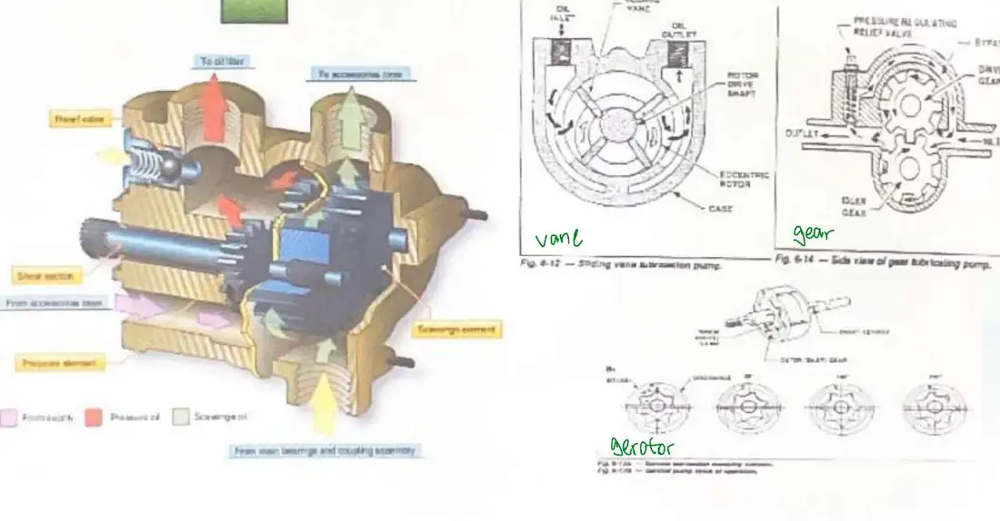
다. Scavenge Pump 소기/배유 펌프
- 윤활한 오일은 Sump에 모인 뒤 탱크로 돌려보낸다
- 윤활유가 기관 내부에서 공기와 혼합되어 체적이 증가하기 때문에 Pressure Pump보다 용량이 더 크다
라~사. Filter · Check V/V · By-Pass V/V · Drain Plug
- Oil Filter: 오염물질 제거. 종류 — Cartridge Type, Screen Type, Screen-Disk Type ☞ 오일은 보통 필터의 바깥에서 안쪽으로 흐른다
- Check V/V: 기관 정지 시 역류 방지
- By-Pass V/V: 여과기가 막혔을 때 윤활유를 계속 공급
- Drain Plug: 여과기 맨 아래에 설치, 걸러진 불순물 배출 시 사용
- Last-chance filter (before spray nozzle) oil nozzle 앞에 붙어있음. 분해 불가능
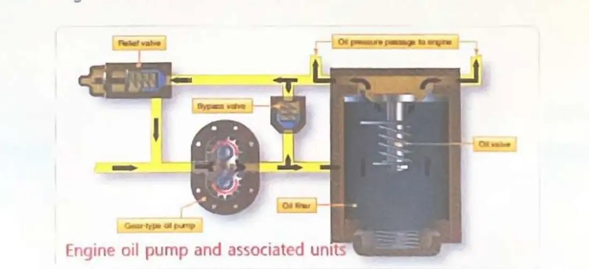
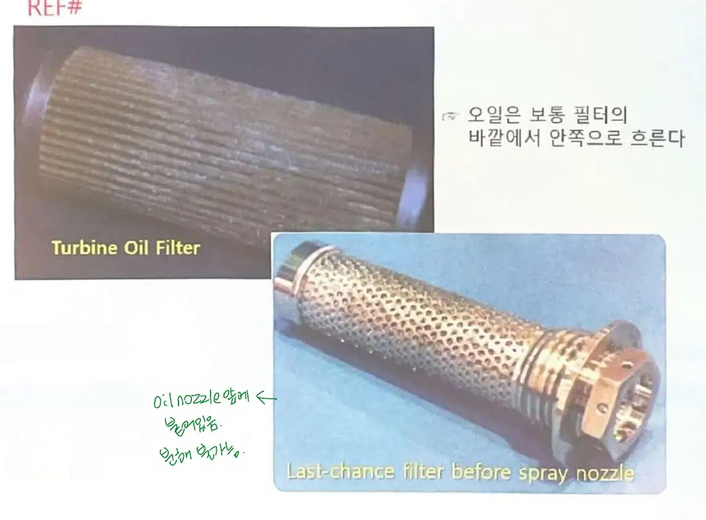
아. 압력조절밸브 Oil Pressure Regulating Valve
- 대부분의 터빈 엔진 오일 계통은 압력 조절식으로 압력을 상당히 일정하게 유지
- 오일 펌프의 가압부에 위치, 계통 내 압력을 정해진 범위로 유지
- 압력을 범위 내로 유지시킨다는 점에서 조절 밸브이고, 릴리프 밸브(Relief Valve)는 시스템의 허용 최대압력 초과 시에만 열린다
- ☞ 스프링의 장력을 증가시키면 밸브가 열리는 압력을 높일 수 있으며 계통 내 압력도 높일 수 있다
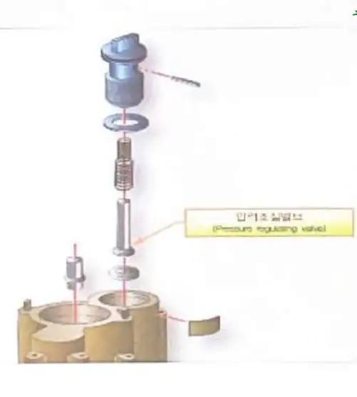
자. 오일 압력 릴리프 밸브 Oil Pressure Relief Valve
- 시스템 압력은 엔진 회전수와 펌프 속도에 따라 변화. 압력 범위가 넓으며, 정해진 최대치를 초과했을 때 압력을 빼주기 위해 사용 (일부 대형 터보팬 오일 계통은 조절 밸브를 갖고 있지 않다)
- 최대치를 초과하면 압력을 낮추고 오일을 펌프 입구로 바이패스
- ☞ 오일 냉각기가 장착된 경우 매우 중요 — 냉각기는 벽 두께가 얇아 쉽게 터질 수 있기 때문. 정상 작동 중에는 열리면 안 된다.
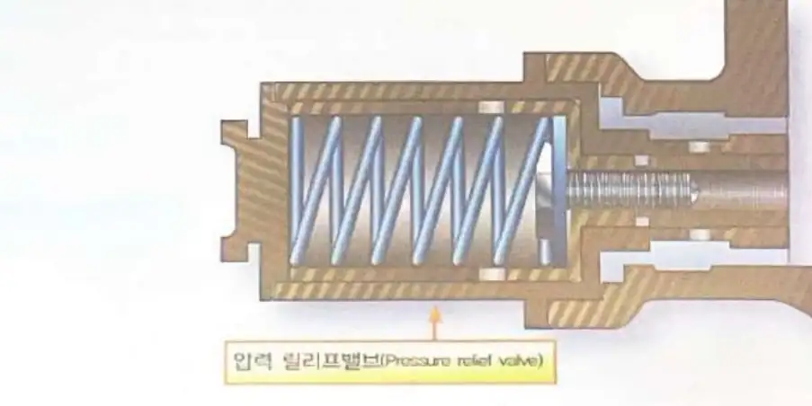
차. 오일 노즐 Oil Jets
- 베어링 구역(Bearing Compartment)과 로터 축 커플링 내 또는 가까운 압력부에 위치
- 오일은 분무 상태로 공급. 일부 엔진은 고압 블리드 공기를 노즐 출구로 보내 안개처럼 분무
- 오리피스가 작아 쉽게 막히므로 오일에 이물질이 없어야 한다
- Last chance Filter가 막히면 베어링 고장·파손으로 이어짐(엔진 수리 중이 아니면 접근·세척 불가) → 오일 노즐이 막혀 베어링이 손상되는 것을 막으려면 메인 오일 필터가 오염되었는지 자주 점검
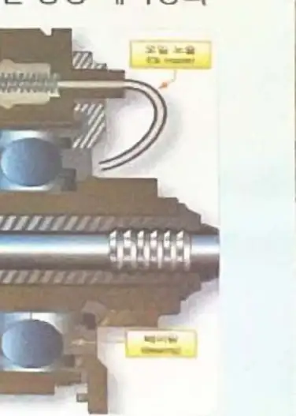
카. 공기 오일 냉각기 Air Oil Coolers
- 오일 냉각기: 공기 냉각식(Air-cooled)과 연료 냉각식(Fuel Cooled) 두 가지
- 공기 냉각식은 보통 엔진 앞쪽에 장착, 왕복엔진의 공랭식 냉각기와 구조·작동이 비슷
- ☞ 공기/오일 냉각기는 보통 건식-섬프 계통에 사용되나 대부분 엔진에서는 두 가지 다 사용
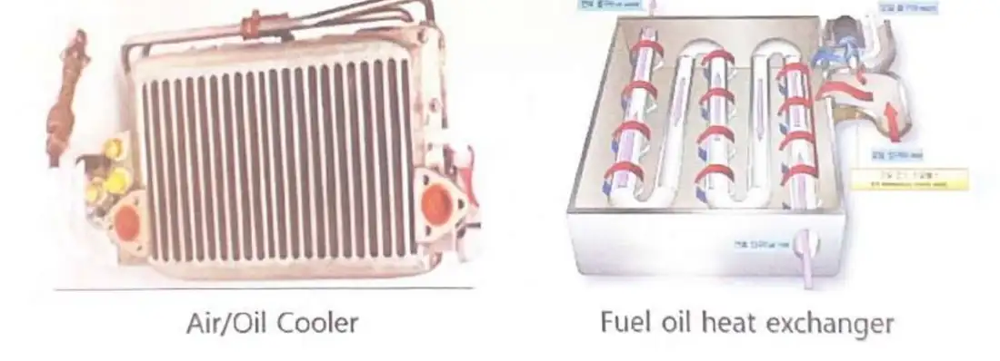
파. 자석 칩 검출기 Magnetic Chip Detector / MCD
- 배유 계통과 윤활유 탱크에 자석을 이용해 금속 입자·파편을 가려내는 MCD가 장착
- 베어링 손상이나 구동 기어 손상 여부를 파악 → 자주 검사
- ☞ 아주 작은 입자·금속 가루는 정상적인 마모, 금속 파편이나 부스러기는 내부에 심각한 고장
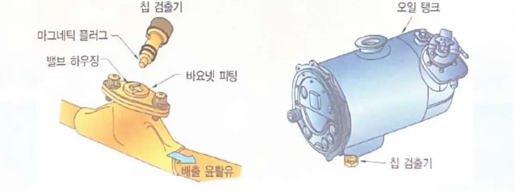
계통도
Pressure-Relief Oil System 그림: cooler가 압력펌프 다음에 있음 → Hot Tank
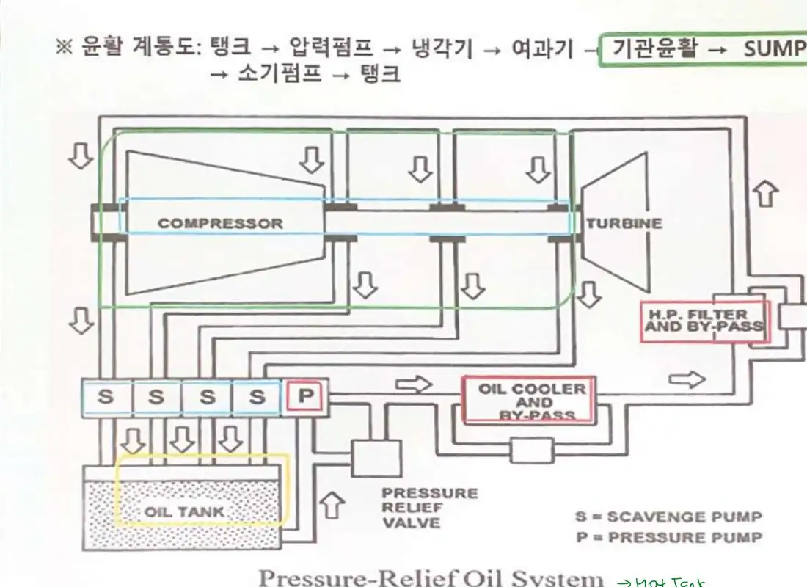
OIL 작동 FLOW 계통도 복습하기
SUMP 이론 · Bleed & Pressurizing
- 비행 중 고도변화(대기압 변화)에도 적절한 윤활유 공급
- 배유 펌프가 충분히 기능을 발휘하도록
- Sump 내 압력은 대기압이 변하더라도 항상 대기압과 일정한 차압
- 압축기에서 Bleed된 압축공기로 Sump를 가압하여 내부 윤활유의 누설 방지
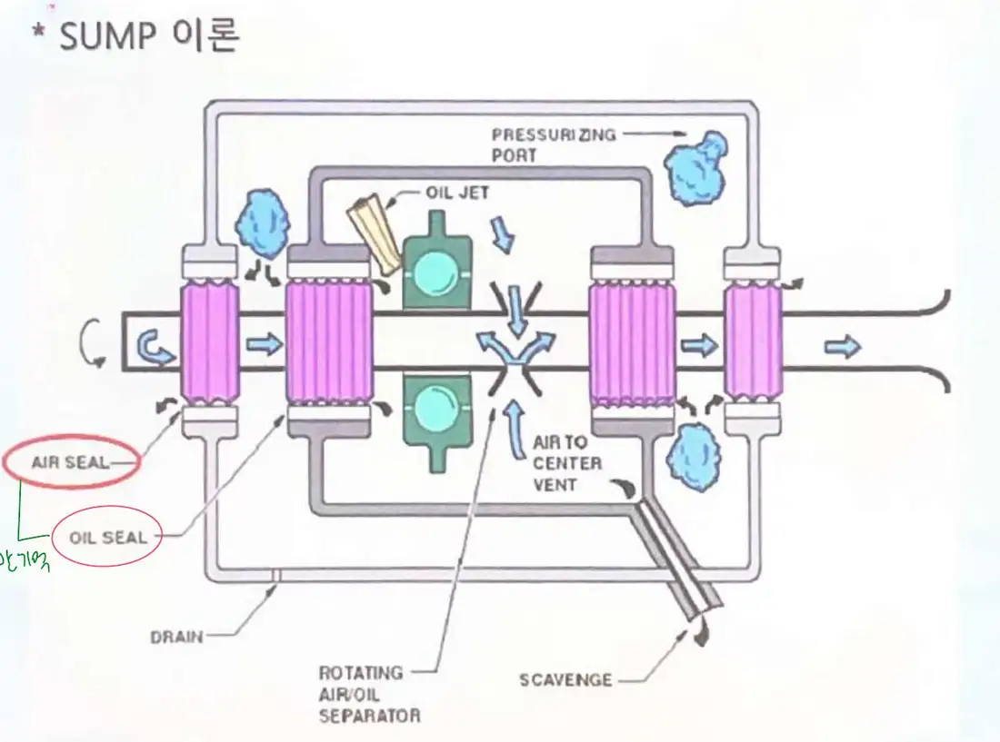
베어링 실 Bearing Seal
- 베어링 하우징은 가스 유로로 오일이 새어 나가지 않도록 Seal을 내장
- 마찰식 탄소 시일(Carbon Rubbing Type)이나 미로형(Labyrinth) 시일이 통상 사용. 각각 별개로, 또는 한 엔진에 두 형식이 동시에
- ☞ 선별해서 쓰는 까닭은 고온부(Hot Section)와 저온부(Cold Section)의 온도 때문. 미로형 시일을 고온부에 쓰면 팽창하여 Seal Land와 접촉, 마모가 일어난다. (Seal Land = 미로형 시일의 고정부)
- Carbon seal (PW4000): FACE TYPE / SPLIT-RING TYPE
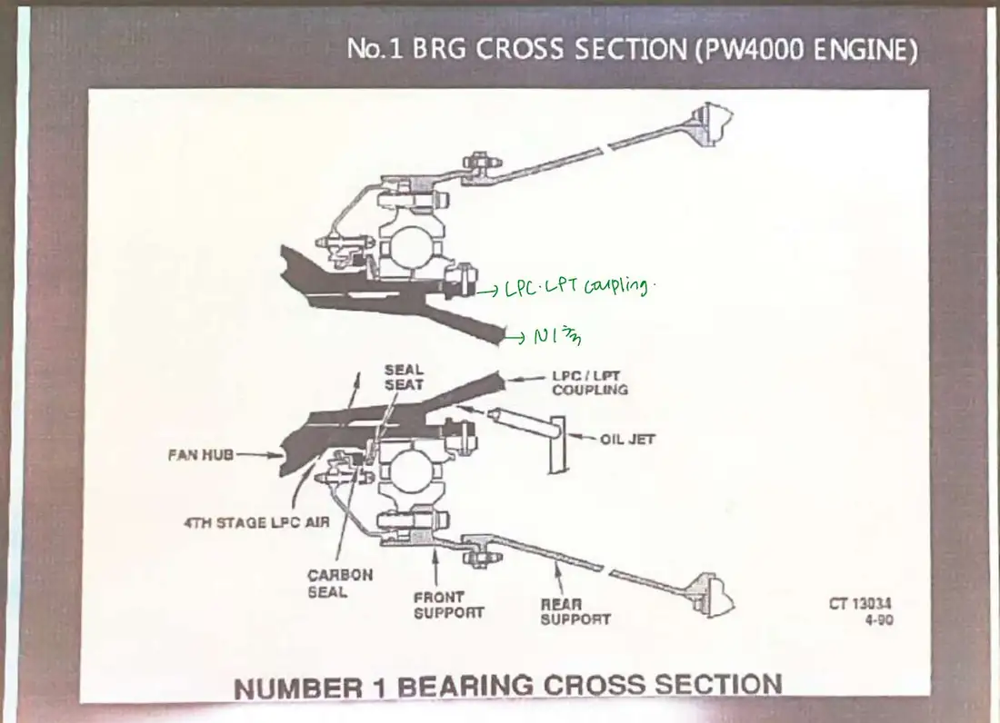
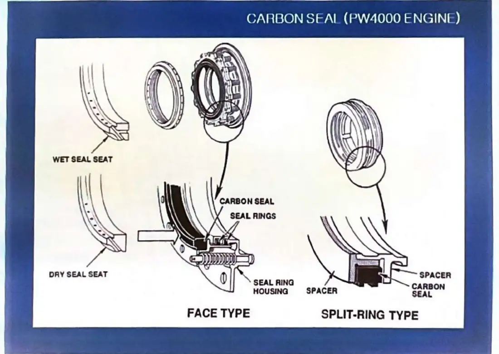
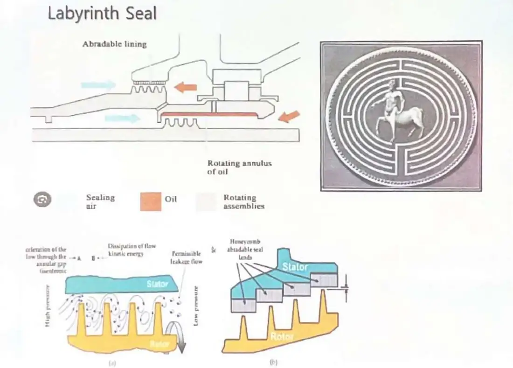
윤활 계통도(PW4000류) 필기
· Bearing Comp' = Sump · #4 베어링엔 Breather가 없음
· 왼쪽 위 = fuel-oil heat exchanger
· DEOILER — oil만 남기고 공기는 내보냄 (Breather) · DEAERATOR — 탱크 쪽
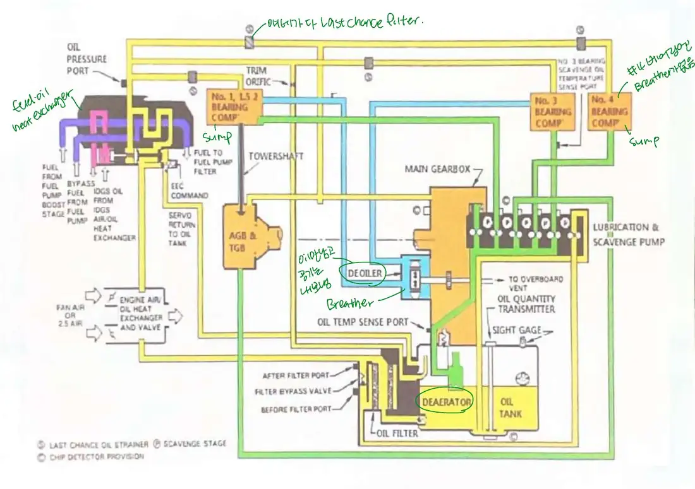
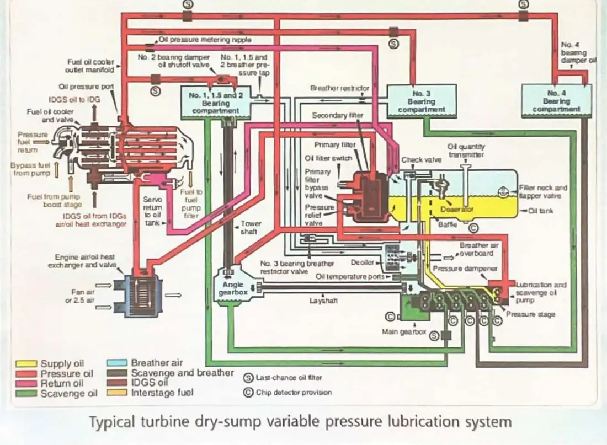
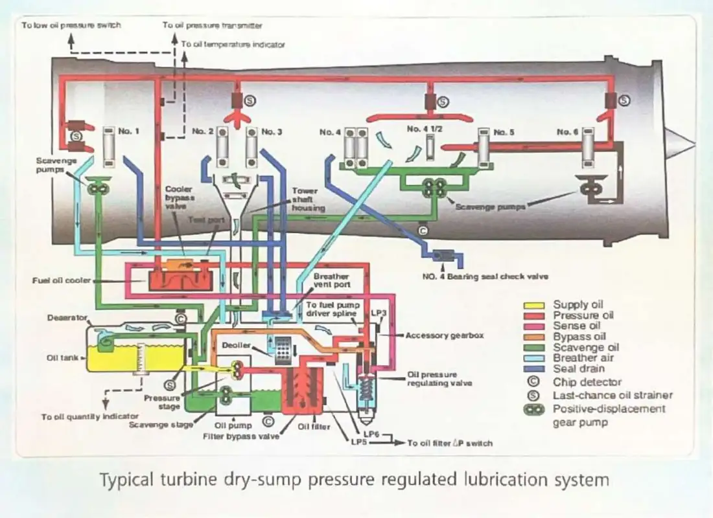
학습문제풀이 — OIL슬라이드에 실린 문제 · 클릭하면 답이 열립니다
답 표시 — 슬라이드에는 정답이 인쇄되어 있지 않아요. 필기 PDF에 직접 표시된 답 · 정리 강의 내용을 근거로 고른 답(교수님 답과 다를 수 있음)
가스 터빈 기관의 윤활유의 구비조건 중 틀린 것은?- 점성과 유동성은 어느 정도 낮아야 한다.
- 윤활유와 공기의 분리성이 좋아야 한다.
- 기화성이 높아야 한다.
- 인화점, 산화 안정성, 열적 안전성이 높아야 한다.
제트 엔진에서 합성유를 사용하는 이유는 무엇인가?- 고온에 잘 견디기 때문에
- 낮은 점성율 때문에
- 제트 엔진에서 특수한 고속 베어링 때문에
- 보다 낮은 인화점 때문에
제트 기관에서 오일 펌프의 종류가 아닌 것은?- 기어 식
- 베인 식
- 유압 식
- 지로터 식
hot tank jet engine의 윤활장치 중 옳은 것은?- 소기 펌프로부터 오일이 직접 탱크로 들어온다.
- 오일 탱크는 호퍼를 가지고 있다.
- 더운 블리드 공기가 오일 탱크로 간다.
- 오일 탱크 내에 열을 발생하는 기구가 있다.
가스 터빈 기관의 기어형 윤활유 펌프에 대한 내용 중 맞는 것은?- 배유 펌프가 압력펌프보다 용량이 크다.
- 압력 펌프가 배유 펌프보다 용량이 크다.
- 배유 펌프와 압력펌프는 동일하다.
- 배유 펌프와 압력펌프는 무관하다.
오일 계통의 과압 시 릴리프 밸브를 지난 오일은 어디로 가는가?- 탱크로 보내진다.
- 펌프 입구로 보낸다.
- 펌프 출구로 보낸다.
- 소기 된다.
fuel-oil cooler의 일차적인 목적은 무엇인가?- 연료 냉각
- 오일 냉각
- 오일에서 공기 제거
- 오일 가열
윤활유 온도를 적당히 유지하기 위하여 냉각기를 통과시키거나 바이패스 시키는 장치는?- 체크 밸브
- P & D valve
- 차단 밸브
- 오일 온도 조절기
fuel-oil cooler의 내부에 구멍이 나서 연료가 오일과 섞였다면 어떤 현상이 일어나는가?- 오일의 양이 증가하고 점도가 낮아진다.
- 오일이 연료계통에 흘러 들어 연소된다.
- 연료와 오일이 혼합되어 출력이 저하된다.
- 배기가스에 그을음이 생긴다.
제트 엔진에 합성 윤활유를 사용하는 이유는 무엇인가?- 여과기가 필요 없고 가격이 저렴하다.
- 휘발성이 적고 높은 온도에서 coking이 잘 일어나지 않는다.
- 광물성과 혼합 가능
- 화학적 안정성
☞ coking: 코크스화 또는 탄화 — 윤활유가 타서 탄소 찌꺼기가 발생하는 현상 → 내열성을 높이면 탄화가 잘 일어나지 않는다. 슬라이드
분광식 오일 분석 프로그램(SOAP)의 목적은 무엇인가? (서술)
Air 계통4-3. Gas Turbine Engine Air System (PART 6, 23 etc.)
air 쓰는 곳 ① 연소실 ② 터빈 냉각 ③ Anti-icing → 주로 cold section, cowl lip ④ TCCS → fan air는 외부에 사용, 간격 조절엔 bleed air 사용
A. Cooling 계통
- 연소 과정이 연속적이므로 냉각 공기의 거의 전부가 엔진 내부를 지나가야 한다.
- 이상적인 공기/연료 비 15:1만 유지하면 내부 온도는 4,000℉(2,200℃) 이상 → 실제로는 훨씬 많은 공기가 들어가 많은 잉여 공기가 엔진 고온부를 냉각, 허용 온도 1,100~1,500℉로 낮춘다.
- 가장 뜨거운 곳은 터빈의 내·외부.
가. Engine Zone Cooling
- 이차 공기는 연소실 라이너를 냉각 — 라이너 안팎 표면에 얇고 빠른 공기 막을 형성.
- 캔-애뉼러형 연소실에는 연소실 중앙으로 냉각공기를 보내는 중심 튜브(Center Tube)가 있다.
- 많은 양의 비교적 차가운 공기가 연소실 후방에서 연소 가스와 섞여 터빈에 들어가기 직전에 식혀준다. TIT 때문
- 엔진 측면에 위치한 것들은 그 주위를 지나는 외부 공기에 의해 냉각
- 엔진 외부와 Nacelle의 냉각은 팬 공기에 의해 냉각
- ☞ 전방 = 저온부(Cold Section), 후방 터빈 부위 = 고온부(Hot Section). 케이스 외부의 잠재적 액체 누출은 Nacelle에 쌓이지 않도록 바깥으로 배출.
나. Accessory Zone Cooling
터빈엔진은 내화성 벌크헤드와 실에 의해 팬 케이스부, 중간 압축기부, 코어 엔진부로 나뉜다.
| 구역 | 범위 | 냉각 |
|---|---|---|
| 1구역 | 액세서리 케이스와 EEC를 포함하는 팬 케이스 주변 | 램 공기를 Nose Cowl 입구로 받아 우측 Fan Cowl의 통풍구(Louvered Vent)로 배출. 압력이 높으면 압력 릴리프 창이 열림 Zone 1 ventilation inlet = ram air |
| 2구역 | 중간 압축기부 (연료·오일 라인 포함) | Fan Duct에서 유입된 팬 공기로 냉각, 아래쪽 끝에서 팬 공기 흐름으로 돌려보냄. 불필요한 증기 제거가 중요 |
| 3구역 | 고압 압축기에서 터빈케이스까지 | 연료·오일 라인, 액세서리 포함 |
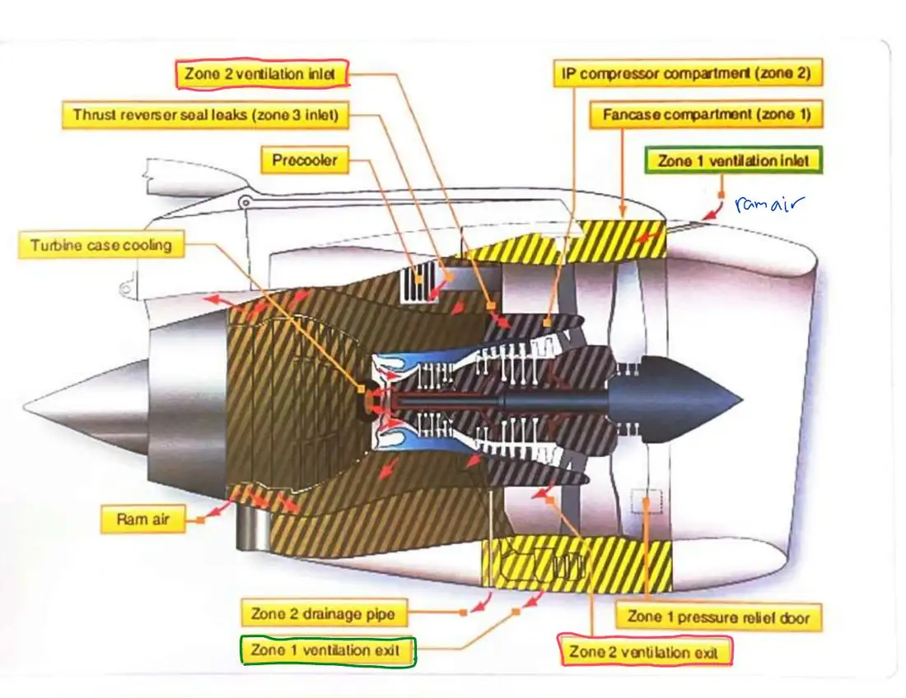
다. Turbine Engine Insulation Blankets
- 배기 Duct 또는 After Burner 부근 구조부의 온도를 낮추고 연료·오일이 뜨거운 부분과 접촉할 가능성을 없애기 위해 때때로 배기 Duct에 절연
- Insulation Blanket: 저전도성 물질로 유리섬유를 이용한 복사 방지재료, 알루미늄 호일 함유, 밀폐되어 오일에 잠기지 않는다
- 층 구성 예: Stainless steel shroud(≈350℉) – Fiberglass – Aluminum foil – Fiberglass – Silver foil – Exhaust duct(≈900℉), Exhaust gas ≈1,000℉
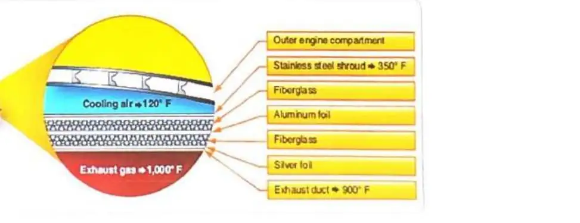
B. Bleed 계통 "only B737"
가. 가변 제어 시스템 variable control system
- 전체 작동상태에서 만족스러운 압축 성능을 유지하도록 설계.
- VBV(variable bleed valve) + HPC 전방 IGV를 포함한 VSV(variable stator vane)로 구성.
- 압축기 제어시스템은 ECU의 명령을 받으며, HMU의 유압신호를 통해 작동 ECU = EEC · 737 엔진은 아직도 EEC + HMU 사용 · servo fuel이 VBV를 움직여 준다
1) VBV variable bleed valve
- 목적: HPC 입구로 들어가는 배출공기의 양을 조절
- 저속에서 LPC는 HPC가 받아들일 수 있는 것보다 많은 공기를 공급
- VBV는 부스터(booster)와 HPC 사이 1차 공기흐름 중간에 장착 부스터 — 737 엔진에만, 기억 X
- 저속에서 LPC의 스톨을 방지하기 위해 VBV는 완전히 열리며, 고속에서 닫힌다
- N1이 증가함에 따라 닫히기 시작하여 N1 80% 이상에서 완전히 닫힌다
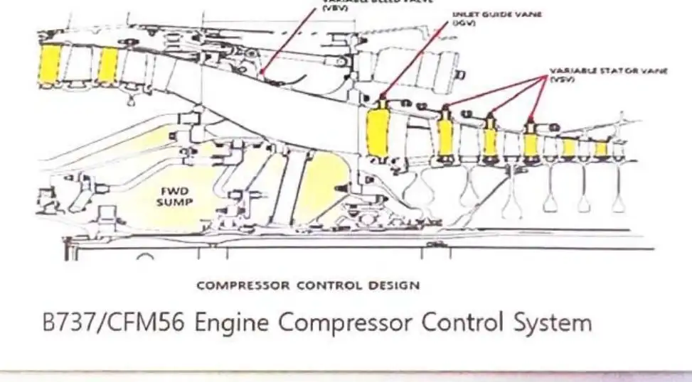
2) VSV variable stator vane
HPC 효율 최적화. 1단계 IGV와 3단계의 HPC stator vane 각도를 조절하여 HPC의 스톨 마진(stall margin)을 향상. (B737/CFM56 Compressor Control System)
3) 고압 터빈 간극 제어 HPTACC — HPT Active Clearance Control
- 터빈 로터와 슈라우드(shroud) 사이의 간극을 조절하여 HPT 효율을 최적화
- 순항(cruise) 중 터빈효율 최적화를 위해 — 팬 배출 공기(fan discharge air)는 고압 터빈의 외부 케이스를 냉각, 고압 압축기 Bleed 공기는 내부 슈라우드를 냉각 → 블레이드와 슈라우드의 간극 조절, 효율 증가
- 슈라우드 지지대의 thermocouple이 EEC에 온도 제공, EEC가 밸브 위치를 계산
- EEC 채널(A or B)이 HMU 내 HPTACC electro-hydraulic servo valve(EHSV)로 신호 → servo valve가 HPTACC 밸브를 작동하는 연료 압력을 조절
- HPTACC 위치: 9th stage air / 4th stage air / HPT ACC valve / discharge manifold
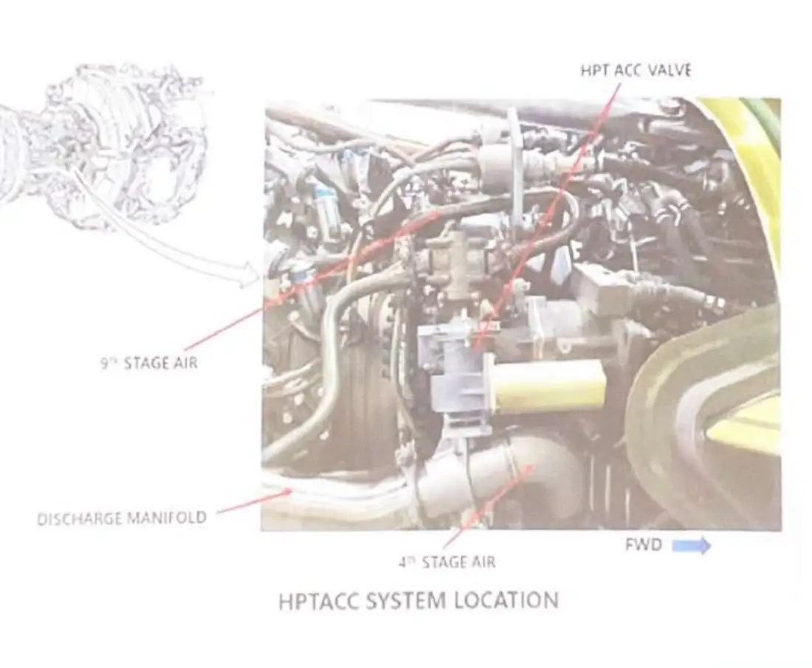
4) 저압 터빈 간극 제어 LPTACC
- LP turbine case를 팬 배출 공기(fan-discharge air)로 냉각시켜 블레이드와 슈라우드의 간극을 조절
- 모든 추력 등급에서 저압 터빈에 최고의 성능을 보장. LPTACC 매니폴드를 통해 가는 팬 배출 공기량을 제어
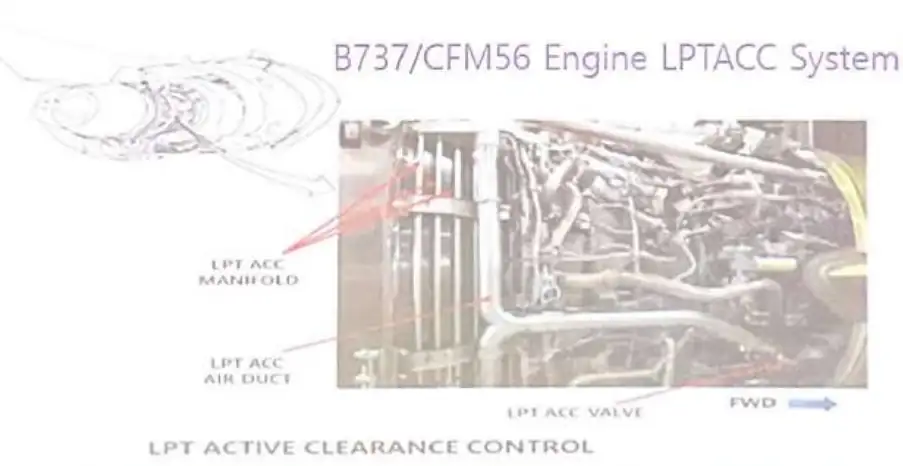
학습문제풀이 — AIR슬라이드에 실린 문제 · 클릭하면 답이 열립니다
답 표시 — 슬라이드에는 정답이 인쇄되어 있지 않아요. 필기 PDF에 직접 표시된 답 · 정리 강의 내용을 근거로 고른 답(교수님 답과 다를 수 있음)
터빈 블레이드 끝과 터빈 케이스 안쪽의 에어 시일과 간격을 줄여주기 위해서 터빈 케이스 외부 냉각을 시켜준다. 여기에 사용되는 냉각 공기는?- 압축기 배출공기
- 팬 압축공기
- 연소실 냉각공기
- 외부공기
제트 엔진에서 TCCS란 무엇을 의미하는가?- 엔진의 추력을 자동적으로 제어해 주는 계통을 말한다
- 터빈 블레이드와 터빈 케이스 사이의 간극을 최소가 되게 해주는 계통이다
- 주로 중·소형의 터보 팬 엔진에 많이 사용한다
- TCCS는 Thrust Case Cooling System의 약자이다.
다음 중 팬 케이스 외부를 냉각하는 공기는 무엇인가?- 압축기 공기
- 배기 공기
- 팬 에어
- 램 에어
TCCS/ACCS 계통은 엔진의 어떠한 성능을 개선시키는가?- 압축기의 압축성능
- 터빈의 구동력 증가
- 연료의 소모량 개선
- 압축기의 실속방지
TCCS/ACCS 계통의 작동은 무엇에 의해 조정되는가?- 오일의 압력
- 연료의 압력
- FADEC
- EPR
점화계통IGNITION (PART 04)
└ 용량형 ─ DC / AC
· DC엔 vibrator 존재 → 맥류를 만듦 (맥류 = 단속전류). vibrator = 마그네토의 breaker point와 같은 역할
· 독립적인 교류발전기는 회전만 시켜주면 전류를 형성
· 교류 용량형 구성요소 ① Exciter — 115 VAC는 FADEC이 보내줌, 고전압을 만들어 줌(변압기로 승압, 정류기를 통해 직류로) ② 점화 리드선 ③ 점화 plug
현대 가스터빈엔진 점화 계통
- Fan Air에 의해 냉각 (Ref. Fan air-cooled exciter: 115 VAC input, Exciter-to-ignitor plug cable connector, Anti-shock mount)
- 단속 임무(intermittent duty 간헐적인): 과열 손상 위험으로 작동 시간 제한 → 시동 시 적용 High energy
- 확장 임무(extended duty): 임무 사이클이 길고 시간제한이 없다 → FLAME OUT 예상 시 연속 점화 유지
- ☞ 연속 점화를 사용하는 중대한 비행 모드: 이륙(Takeoff), 착륙(Landing), 비정상(Abnormal)·비상(Emergency) 상태 재점화가 필요한 상태
- 계통 내 2개의 점화 플러그가 4시, 8시 방향에 장착
- ENGINE START 스위치: GRD / OFF / CONT / FLT, IGN L · BOTH · R CONT = 저전압 상태가 지속적으로(continuity)
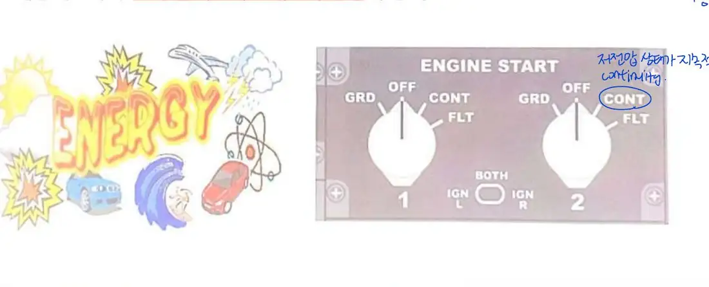
A. 유도형 점화계통 Induction Ignition Type
- 초기의 가스터빈 기관에 사용
- Vibrator(왕복기관의 Booster Coil과 유사)와 변압기로 구성. Vibrator는 직류를 맥류로 변환, 변압기는 점화에 필요한 전압으로 승압
1) 직류 유도형
28V 직류가 진동자에 공급, 진동자가 스프링 힘과 코일 자장으로 진동하면서 점화코일 1차 코일에 맥류 공급. 2개 점화코일의 2차 코일에 극성이 서로 반대인 높은 전압이 유도되어 Ignitor 두 전극 사이에 불꽃 발생.
2) 교류 유도형
가장 간단한 점화장치. 115V, 400Hz 교류를 전원으로 사용. 시동 시 인버터에 의한 28V 직류로 점화 계전기에 교류 공급 → 점화 릴레이가 연결되어 변압기 1차 코일에 교류, 2차 코일에 높은 전압 유도 → 불꽃.
B. 용량형 점화계통 Capacitor Ignition Type
Condenser(Capacitor)에 전하를 저장했다가 점화 시 짧은 시간 동안 방전시켜 고에너지·고온의 Spark 발생. ☞ 가스터빈기관의 대부분이 현재 사용하는 방식
1) 직류 고전압 용량형
- 입력: 24V 직류가 통신 잡음을 없애는 필터를 거쳐 공급 (통신잡음은 통신장비와 점화장치가 같은 배터리를 쓰기 때문)
- 바이브레이터의 1차·2차 코일을 지난 교류는 정류기에서 직류로 바뀌어 저장 콘덴서에 저장 → 방전관에서 방전되며 고압 변압기 1차 코일을 통해 트리거 콘덴서로 흐를 때 2차 코일에 높은 전압 유기 → 이그나이터에 초당 4~8번 스파크
- 회로: 입력 → 필터 → 바이브레이터(영구자석·진동자, DC 맥류 유도) → 정류기 → 큰 저장 콘덴서 → 방전관 → 고압 변압기(블리더 저항, 트리거 콘덴서) → 이그나이터
2) 교류 고전압 용량형
- 115V, 400Hz 교류 이용. 필터를 거쳐 동력변압기 1차 코일에 공급, 2차 코일에 약 1,700V 유도
- 고압 변압기 2차 코일에 20,000V 정도의 높은 전압이 유기 → 이그나이터와 방전관 Y의 간극이 이온화, 저장 콘덴서의 나머지 전하가 순간적으로 흘러 강한 스파크
학습정리
C. 점화선 High Tension Lead
Exciter와 점화 플러그를 접속하는 고압 전선. 무선 방해와 접촉에 의한 마멸·단선을 막기 위해 Shield cable 사용.
D. 점화 플러그 Ignitor
- 기관당 2개 정도가 독립된 장치에 의해 작동
- 왕복 기관 Spark Plug보다 큰 에너지, 저압에서 작동되나 전극 사이 간격이 큼
- 전압이 가해지면 갭 사이 공기가 먼저 이온화 → 전기저항이 낮아져 비교적 저전압으로 충분한 방전
- 최근에는 원주 전극에 반도체를 장치하거나 특수 코팅으로 이온화가 쉽게 되도록 함
① Annular Gap Type
대부분의 엔진에서 널리 사용 (long reach plug). 중심 전극이 연소실 안쪽에 돌출되게 장착되며 중심 전극이 짧다.
② Constrained Gap Type
터빈 엔진의 일부 형식에 사용. 중심 전극이 길며 Annular Gap Type보다 낮은 전압에서 작동, 원호를 그리면서 튄다.
가스터빈기관 점화계통의 특징
- 시동 시만 점화 필요 → 점화시기 조절 장치가 필요 없어 왕복 기관에 비해 구조와 작동이 간단. 다만 연료 특성과 공기 흐름 때문에 혼합가스 점화가 매우 어려워 높은 에너지를 가지는 전기 Spark를 이용
- 연료는 기화성이 낮고 혼합비가 희박해 점화가 쉽지 않으며, 고공에서는 기온이 낮아 기관 정지 시 재시동이 어렵다
- 연소실을 지나는 공기는 속도가 빠르고 와류가 심해 시동 시 점화가 어렵다
<왕복기관과의 차이점>
- 시동할 때만 점화가 필요하다
- Ignitor의 교환이 빈번하지 않다
- Ignitor가 두 개 정도만 필요하다
- 교류 전력을 이용할 수 있다
- 타이밍 장치가 필요 없다
학습문제풀이 — IGNITION슬라이드에 실린 문제 · 클릭하면 답이 열립니다
답 표시 — 슬라이드에는 정답이 인쇄되어 있지 않아요. 필기 PDF에 직접 표시된 답 · 정리 강의 내용을 근거로 고른 답(교수님 답과 다를 수 있음)
가스 터빈 기관의 점화장치 중에서 가장 간단한 점화장치는?- 직류 유도형 점화장치
- 교류 유도형 점화장치
- 직류 유도형 반대 극성 점화장치
- 교류 유도형 반대 극성 점화장치
가스 터빈 기관의 점화장치는 언제 작동하는가?- 엔진 시동할 때만
- 시동 시 및 flame out 발생시
- 엔진 작동 중 연속적으로 사용
- 엔진의 고속 운전에만 연속적으로 사용
엔진의 작동 한계Engine Operating Limits · 8주차
가. 엔진의 출력 정격 Power Rating
출력 정격 = 이륙·상승·순항 등 비행 상태에 적합하도록 제작사가 정한 출력.
| 정격 | 내용 |
|---|---|
| 이륙출력 take-off power | 추력 레버를 이륙 위치에 놓았을 때의 최대 출력. 일반적으로 최대 5분 이내로 사용 제한 |
| 최대 연속출력 maximum continuous power | 시간 제한 없이 연속 사용 가능한 최대 출력. 이륙 추력의 90% 정도. 엔진 수명·비행안전을 고려해 필요한 경우에만 사용 |
| 최대 상승출력 maximum climb power | 상승비행용 보증 추력. 주로 최대 연속출력과 동일 |
| 최대 순항출력 maximum cruise power | 순항용 최대출력. 보통 이륙출력의 70~80%. 연료 소비율이 가장 적은 출력 |
| 아이들 출력 idle power | 엔진이 자력으로 회전할 수 있는 출력 |
나. 시동 한계
정상 작동이나 모터링 시 시동기 보호를 위해 규정된 시동기 냉각시간을 반드시 지켜야 한다. 냉각시간은 엔진·시동기 종류와 작동시간에 따라 다르므로 해당 정비지침서의 권고값을 준수한다.
다. 엔진의 비정상 작동
1) 과열 시동 Hot starting
시동할 때 배기가스 온도가 규정 한계값 이상으로 증가하는 현상. → 연료 조정 장치의 고장, 결빙이나 압축기의 공기 흐름 이상으로 발생.
☞ 대부분의 제작사는 과열 상태를 특정 온도 기준으로 정하며, 초과 시간과 온도의 관계로 과열시동 여부를 판단.
2) 결핍 시동 Hung starting
엔진 회전수가 아이들 회전수까지 증가하지 않고 낮은 회전수에 머무는 현상. → 배기가스 온도가 계속 상승하므로 한계 온도 초과 전에 시동을 중지시킬 준비가 필요.
3) 시동 불능 Not starting
규정된 시간 안에 시동되지 않는 현상. → 엔진 회전수나 배기가스 온도가 상승하지 않는 것으로 판단.
☞ 원인: 시동기 고장, 점화 장치·점화 계통 고장, 연료 흐름의 막힘, 연료 조정 장치 고장 등.
시동 계통 — 시동기5-2. Starting System (PART 05)
GENERAL — 왕복엔진과의 차이
왕복 엔진 시동계통
- 정상 시동 후 Starter의 작동 즉시 차단
- 점화계통은 엔진작동 중 매 점화 Cycle에 맞추어 연속적으로 작동
가스터빈 엔진 시동계통
- 정상 시동이 이루어질 때까지 Starter 작동이 계속되어야 한다
- 자립회전 속도에 도달 시까지 N2 Shaft를 계속 가속
- 점화계통은 연소실 내 화염이 발생하면 더 이상 작동할 필요 없음
☞ 자립 회전 속도 Self Sustaining Speed
엔진이 자력으로 Turbine을 구동하여 회전을 할 수 있는 속도 → 자립 회전 속도 < IDLE 속도
A. 가스터빈 엔진 시동 계통
가. 요구 조건
- 연소를 위해 공기가 연소실로 충분히 공급될 수 있는 속도로 압축기를 회전
- Turbine이 동력을 발생시킬 수 있는 시점(Self-Rotation Point)까지 엔진을 가속
나. 작동 방식
다. Starter의 종류
1) Electric Starter (전기식) — Electric Motor Type
- 소형 항공기 및 APU에 사용
- 처음 시동 시 약 1,000~2,000A 소모 → 외부로부터 큰 용량의 전력 필요
- 별도의 발전기(28VDC) 또는 24VDC Battery 사용
- ☞ Battery는 보통 3,000AH, 발전기 이용 시 28~30VDC·2,000A를 순간 공급. 시동 시 Starter Motor 단자전압이 18V 이하로 Drop되어서는 안 된다.
2) Electric Starter-Generator Type
- 전투기 및 차세대 엔진에 사용
- 시동 시 Starter로 작동, 정상 자립 회전속도 도달 시 Generator Mode로 변환
- Starter와 Generator를 별도로 장착할 필요가 없어 무게 절감
- B787의 VFSG 등 최신 항공기·전투기에 사용되는 추세 VFSG = Variable Frequency Starter Generator
- B787: VFSG 2대(230 VAC) ↔ CMSC(Common Motor Start Controller) ↔ BPCU, EEC가 Start Torque Command. Ground Start = One Exciter Sparks / In-Flight Start = Both Exciters Spark
pass Starter generator circuit: GTG ⇒ MASTER S/W "ON" ⇒ STARTER S/W(COMPRESSOR 구동) ⇒ T/L MOVE(3% RPM, IGNITION 후 FUEL BOOSTER 작동) ⇒ 6% RPM, F/F 450~650 pph, EGT 550~750℃ ⇒ 25% RPM에서 GTG REMOVE
3) Air Turbine / Pneumatic Starter (공기식)
- 상업용 항공기인 High Bypass 엔진에 주로 사용
- 일시에 큰 Torque를 지속적으로 낼 수 있어 Start 시 요구되는 High Torque에 적합
- 외부 동력 없이 자체 시동 가능 / 저압 공기 모터 형식으로 중량비에 비해 고출력
- 무게가 가볍다 → 동일 출력 Electrical Motor의 1/4~1/5
- Single Stage의 축류형 Turbine 형식 Air Motor (60,000~80,000 rpm, reduction rate 20~30:1)
자립 회전 속도 도달까지 장시간 회전시켜야 하므로 Electric Starter는 일시에 큰 전류를 소모해 Battery 성능 저하·많은 열 발생. 큰 시동 토크를 위해서는 Pneumatic보다 상대적으로 부피가 커진다. Pneumatic Starter는 작은 부피에 비해 시동 토크가 크고 연속 장시간 작동해도 무방.
Air turbine starters are supplied by Ground Cart, APU, or another operating on-board Engine Bleed air (Cross feed).
pass Starter Oil Service: Pressure Fill(A330, B777 — Overflow Port로 나올 때까지 Pressure Fill Port로 천천히) / Gravity Fill(B747-400, A300-600). Sight Glass 약 7/8(12온스). Servicing 전 Drain하여 7온스 이하면 Starter 교환, MCD 0.1"보다 큰 금속 검출 시 교환.
4) 기타
- Cartridge Starter(카트리지형) / 비상용 일회용 · 민간 상업용엔 잘 안 씀 → 대형 군용기에 쓰임
- Fuel-Air(F/A) Starter: 소형 엔진과 유사 Starter(3,000 psi 공급 가능) → 축전지 전기 점화로 연소하여 자체 시동 능력
- Air impingement starting system: 압축기나 터빈 Blade에 압축 공기를 직접 분사 → 입구 PORT만 요구 → 가장 간단한 구조
라. Clutch Assembly
- 기능: Starter를 자동으로 엔진 회전축과 분리 / 엔진 구동 시 과다한 Torque 공급 방지 / Over-running 시 Clutch 기능
- 종류: Pawl & Ratchet Type common / Sprags Type
- ☞ 차단 속도에 도달하면 시동밸브 close → 시동기가 멈추면 엔진 구동 바깥쪽 클러치기어가 안쪽보다 빨리 회전, 리턴 스프링이 바깥쪽 클러치기어를 분리시켜 회전자가 정지 → 바깥쪽 클러치 축은 엔진과 함께 회전
마. Pressure-regulating and shutoff valve 압력 조절 & 차단 밸브
- 시동기 유입 관을 통과하는 모든 압력을 복합적으로 제어
- 시동기 작동 공기 압력을 조절, 'OFF' 위치일 때 엔진으로의 공기 공급 차단
- 2개 부품: 압력조절밸브와 압력조절밸브 제어부 Solenoid·Control crank·Bellows 쪽 = 제어부 / Pilot valve·Servo-piston·Cam 쪽 = 조절부 / downstream = starter 위치
모터링 · 시동 절차 · 비정상 시동Engine Motoring · Starting Sequence · Abnormal Starting
B. Engine Motoring
시동 및 추력 발생 목적 이외에 압축기와 터빈을 시동기로 단순히 회전시키는 작동 방법.
★ Motoring이란? Starter로 AGB(Accessory Gear Box)를 구동시켜 Engine Gas Generator(Core)를 구동, AGB에 장착된 보기품의 정상 작동 확인 및 정비작업·검사(Functional / Operation / Leak Check)를 위해 수행.
가. Dry Motoring
연료 공급 및 점화를 배제한 단순한 엔진 구동
- 엔진 Cool Down 시 수행
- 시동 실패 시 엔진 내 잔존 연료를 배출 ☞ Tailpipe에서 Fuel Fog가 안 나올 때까지
- AGB 장착 Component 구동을 위해
나. Wet Motoring
점화 없이 연료만 공급하여 엔진 구동
- 연료계통 작업 후 Fuel Lag(Pump Cavitation) 방지
- 연료계통 Component 작동 점검
- 연료계통 누설 점검 시
Motoring 전 cool down(1분) 시켜주는 이유? — 터빈 Blade와 case가 닿는 걸 방지하기 위해
C. 엔진 시동 단계
| # | N2 | 동작 |
|---|---|---|
| 1 | — | Ignition Switch Select → "Armed" |
| 2 | — | Start Valve "Open" 및 Ignition "Activated" (Motoring) ☞ Pneumatic System PRV "Close" → 역류방지 / PRSOV "Open" → Start Valve로 Air Source 공급 |
| 3 | 15% | Fuel Control Switch "On (Run)" / MAX Motoring 상태 EEC는 T3(연소실 입구온도)와 T2(엔진 입구온도)의 차이(ΔT)를 Monitor하여 연료 Scheduling 결정. Cold Engine ΔT ≤ 44℃, Hot Engine ΔT ≤ 66.7℃ → 44~66.7℃ 범위에서 Scheduling |
| 4 | 25~35% | Self-Sustaining Speed (Accelerating) |
| 5 | 40% | Ignition "Off" |
| 6 | 45~50% | Starter "Cut-out" (일반적으로 N2 4,500~4,800 rpm, 이후 IDLE까지 가속) |
| 7 | 61~65% | IDLE Speed (Thrust Lever Advance) |
☞ Max Motoring: Manual Starting 시 가능한 한 Max Motoring일 때 연료를 공급 → Starting Surge Margin 확보, Starting 시간 단축.
● 공기식 시동기 Starting Sequence 정리 (Turbo-Fan)
- Power Source로부터 Pneumatic Source를 공급받는다
- Start Valve가 "Open" → Pneumatic Power가 Starter로 전달
- Starter는 AGB를 통해 N2 Shaft를 구동
- N2 Shaft가 구동되고 연소가 이루어지면 공기의 팽창에 의해 N1 Shaft가 회전
※ Pneumatic Power Source: APU Bleed Air / Other Engine Bleed Air(Cross Bleed) / GTC(Ground Turbine Cart) or ASU(Air Supply Unit)
엔진 시동 중 RPM·EGT 곡선: Starter V/V ON → Ignition ON → Fuel ON(15%) → 시동 시작(EGT 상승) → 자체 가속 속도 → Ignition OFF(40%) → 시동기 차단(45~50%) → 최고 시동 EGT → Idle RPM(63%) → Idle EGT. 최고 시동 EGT > Idle EGT.
나. 비정상 시동 Abnormal Starting
1) Hot Start (과열 시동)
연료가 연소되기 시작한 후 EGT가 제한치(Redline) 이상 증가하는 현상
원인
- 연료 조정장치의 고장 (Fuel Scheduling이 잘못된 경우)
- 결빙 등으로 인한 압축기 입구에서의 공기흐름의 제한
- Starter Valve 조절 불량으로 N2 Speed가 현저히 낮은 경우
- Starter가 단시간 동안만 작동했을 경우
- 시동 전 연소실 내부에 잔존 연료가 있었을 경우
- 이물질에 의해 Rotor에 손상이 있는 경우
- IGV와 VSV의 부적절한 Scheduling
- 높은 외기온도(약 32℃ 이상)
- 낮은 EGT Margin Starting
- 측풍 발생 시(약 60° Head Wind / 25 Knot 초과)
- 엔진 내부 손상(Gas Path Deterioration, Hot Section)
조치
- Over Temperature 발생 시 엔진을 Cool Down(Dry Motoring)시킨 후 정상 절차에 따라 Shut-Down
- 부가적인 Damage가 발생되었다고 판단되면 비상 절차에 따라 Shut-Down
- 제한치(Redline) 초과 시 주어진 절차에 따라 엔진 Inspection — Continue in service Limit 초과 여부 확인 / Tail Pipe Visual Inspection으로 작은 금속 알갱이(좁쌀) 확인 / Hot Section BSI(Bore Scope Inspection)
2) Hung Start (결핍 시동)
연료가 연소되기 시작하였으나 일정 시간 내에 정상 IDLE Speed에 도달하지 못하는 현상
징후: N2가 평상시보다 천천히 증가 / Minimum N2 IDLE 이하에서 머무름 / N2 17% 이하에서 HPC Rotor가 머무름 / EGT가 Limit 이상으로 갑자기 증가
원인 원인 많은데, 이 중에 몇 가지만 기억해
- Starter 동력이 충분히 공급되지 못해 Duct Pressure가 현저히 낮은 경우
- Starter가 단시간 동안만 작동
- 이물질 유입으로 압축기 손상
- 불충분한 Start Valve의 Open
- IGV와 VSV가 올바르게 Scheduling 되지 않은 경우
- 압축기와 터빈 부분의 손상
- N1 Shaft가 마찰 등으로 원활하게 회전하지 못하는 경우
- Warm 또는 Hot 상태의 엔진일 경우
※ FADEC(EEC)는 엔진이 Warm 또는 Hot 상태일 경우 이를 감지하여 연료 흐름량을 낮추어 Scheduling 이런 현상이 생기기 전에 FADEC이 알아서 조절
3) Start Failure (시동 실패)
- Not Start — 시동이 되지 않는 현상: Starter Quill Shaft 등의 Shear로 동력이 전달되지 않거나 Start Valve가 고착되어 열리지 않을 경우 / 점화 계통·연료 조정장치 고장으로 연료 흐름이 차단될 경우 / 엔진이 회전하지 않을 경우 Not Start라고 판단
- No Light — 규정된 시간 내에 점화가 되지 않는 현상 (wet start) 연료는 들어가는데 점화가 안 되는 현상
※ 시동 후 20초 이후에 EGT가 28℃(상온)보다 낮게 증가하면 점화가 이루어지지 않았다고 판단
나. 시동의 종류
- Ground Starting: 운항 및 정비 목적으로 지상에서 시동
- Manual Start: 시동 절차에 따라 조종석에서 일련의 조작
- Auto Start: 조종석 조작으로 EEC가 엔진을 제어하며 자동 시동
- Start Valve Override Start: 조종석에서의 조작 및 지상의 Starter Control Valve 조작이 협업되어 시동 손으로 정비사가 강제로 열어줌
☞ 시동 전이나 비행 전 Start Valve Full Close 상태를 필히 확인!
- In-Flight Starting (= Air Starting): 비행 중 Flame Out 되었을 시 재시동
- Starting 중 결함 발생 시: 정상 절차에 의거 Engine Shut Down → 필요 시 Tail Pipe에서 Fuel Fog가 안 나올 때까지 Dry Motoring
기억 안 해도… 왕복항공기 시동절차: 연료 차단밸브 open → 기화기 heater(pull "on") → 프라이머 pumping(mix. Rich) → 스로틀 밸브 push → Master sw "on" → 시동(점화) heater: 기화 잘 되라고 살짝 heating / 프라이머: 연료를 직접 뿌려서 농후 혼합비로 만듦, 시동 잘 되라고
다. Starter Duty Cycle
1) Duty Cycle을 두는 이유
- Starter의 Cooling Time을 제공하여 Starter를 보호
- Starter의 Over Heat를 방지하고 내구성을 증가
- Battery 및 Starter의 수명 제고
2) Duty Cycle 방법
- 한 번 사용 시 최대 5분 동안 작동
- 한 번 작동 후 다음 작동까지 약 10~15분 정도 Cooling Time
3) Starter Re-engagement
- 엔진이 회전 중일 때 Re-engage 시 N2 15% 이상에서 Engage하면 안 된다 (Starter Damage)
- 지상에서는 Fan Blade가 완전히 Stop된 후 하는 것이 좋다
학습문제풀이 — STARTING슬라이드에 실린 문제 · 클릭하면 답이 열립니다
답 표시 — 슬라이드에는 정답이 인쇄되어 있지 않아요. 필기 PDF에 직접 표시된 답 · 정리 강의 내용을 근거로 고른 답(교수님 답과 다를 수 있음)
다음 시동기 중에서 그 구조가 가장 간단한 것은?- 공기 충돌 식
- 가스 터빈 식
- 시동-발전기식
- 전동기식
공기 터빈 식 시동기의 장점이 아닌 것은?- 대형엔진에 적합하다.
- 출력이 크게 요구되는 기관에 사용된다
- 많은 양의 압축공기를 필요로 한다
- 전기 식보다 공기식이 더 무겁다
터빈 엔진을 시동할 때 starter가 분리되는 시기는 언제인가?- rpm 경고등이 off 되었을 때
- rpm이 idle 상태일 때
- rpm이 100% 되는 상태
- 점화가 끝나고 연료 공급이 시작될 때
엔진 작동 중에도 엔진과 연결된 상태의 시동기는?- 공기 충돌 식
- 가스 터빈 식
- 시동-발전기 식
- 전동기 식
엔진 시동 시 시동밸브 스위치의 전기적 신호에 의해 밸브가 열리지 않았다. 조치사항은?- 시동스위치의 교환
- 시동스위치 솔레노이드의 점검
- pilot valve rod을 수동으로 하여 밸브를 open
- manual override handle을 수동으로 하여 밸브를 open
터빈엔진 시동 시 결핍 시동(HUNG START)은 엔진의 어떤 상태를 말하는가?- 배기가스 온도가 규정치를 넘은 상태다.
- 엔진이 완속 회전(IDLE RPM)에 도달하지 못하고 걸린 상태이다.
- 완속 회전(IDLE RPM)이 규정치를 넘은 상태이다.
- 압력비가 규정치를 초과한 상태이다.
가스 터빈 엔진 시동 후 엔진 계기로 점검하니 배기 가스온도가 시동할 때보다 다소 낮게 지시하고 있다면 어떤 현상 때문인가?- 연료 압력 이상
- 베어링 손상
- 배기가스 온도의 열전대가 끊어졌다.
- 정상이다.
드라이 모터링(dry motoring) 점검할 때 틀린 것은?- 점화스위치 off
- 연료차단 레버 off
- 연료 부스터 펌프 on
- 점화스위치 on
터빈 엔진의 시동 중 화재발생 시 조치사항은 무엇인가?- 연료를 차단하고 기관을 계속 회전시킨다.
- 즉시 starter SW를 끊는다.
- 소화를 위한 시도를 계속한다.
- power lever 조정으로 연료의 배기를 돕는다.
엔진의 wet motoring 수행과정 중 작동해서는 안 되는 사항은 무엇인가?- start lever를 작동시킨다.
- 엔진 rpm이 10% 상승되었을 때 연료차단 레버를 on 한다.
- 연료흐름이 정상인지를 확인한 후 점화스위치를 on 한다.
- 작동을 멈출 때에는 연료차단 레버를 off 후 30초 이상 dry motoring 한다.
다음 중 Duty Cycle을 두는 이유로써 적합치 않은 것은?- Starter의 Cooling Time을 제공하여 Starter를 보호
- Starter의 Over Heat을 방지하고 내구성을 증가
- Battery 및 Starter의 수명 제고
- 다 맞다
가스터빈엔진의 자립회전 속도(Self Sustaining Speed)란 무엇인가? (서술)
정비방식 · 엔진의 장탈 사유CHAPTER 08 엔진 장탈 및 교환 — 8.1 ~ 8.2 (11주차)
손필기 — 정비방식
· 정비작업 → Visual, Functional, Operation Check / Servicing / 환원 / Discard
· "감항성" 확보가 제일 큰 목적
· CAMP: 지속적인 감항성을 확보하기 위한 정비방식
✍ MSG Maint' Steering Group
| MSG | 연대 | 내용 (필기) |
|---|---|---|
| Ⅰ | 1960 | (제작사가 오버홀 주기를 설정하고 실적에 따라 연장 — 8.2.1 필기 "→ MSG 1") |
| Ⅱ | 1970 | 이때 선정된 게 HT, On-Con, CM → Bottom-up 방식 (HT ↳ 오버홀, TRP, TCI) |
| Ⅲ | 1980 | Top-Down 방식: 기종별 · Zone별 · 시스템별로 세분화시킴 ⇒ 이게 정비요목 |
✍ 정비작업 Maint' Task
- 1. 정상작업 — 계획정비(schedule work) / 비계획정비(unschedule work)
- 2. 특별작업 — 예) 새로운 부품 추가…
| 구분 | 내용 |
|---|---|
| 운항정비 Line Maint' | PR/PO, ONS, 항공기 출발 때마다 확인 (A 체크도 이쪽으로 화살표) |
| 기체정비 | A, C·D → 둘 중 하나만 해서 항공기 운영 / ISI → Zone별로 나눠 올해 여기, 내년에 여기 이런 식으로 정비 |
| 엔진정비 | HSI / CSI ("HSI 권장"으로 보임) / OVHL |
| 전자보기 | Visual: 이때 Functional 추가 / Bench Check → 문제 있으면 Repair / OVHL |
| 객실정비 |
8.1 서론
- 엔진 교환 절차는 항공기와 엔진 형식에 따라 다르고 모든 엔진에 적용되는 하나의 절차가 없으므로 대표적인 장탈·장착 절차를 설명.
- 공통 사항: (가) 장착할 엔진을 준비하고 저장 정비·보관하는 엔진 관리사항 (나) 교환 시 분리·재연결해야 하는 전기·유압·연료공급 라인, 공기 흡입구·배기구 부품, 엔진 컨트롤, 엔진 마운트 등
- ☞ 엔진 모델마다 특수성이 있으므로 실제 교환 시는 반드시 제작사의 해당 정비 교범을 참고.
8.2 엔진의 장탈 사유
❖ 계획 장탈
계획 정비 시기 도래(Hot Section Inspection, Cold Section Inspection, or Overhaul), 엔진 회전 부품(Life Limit Part)의 수명 도래, 특정 결함 부위 점검 시기 도래, 엔진 운영시간 관리(Time Staggering) 등으로 사전에 계획된 교환
❖ 비계획 장탈
운영 중 결함이 발생하여 더 이상 운영할 수 없는 상황에서의 교환. 비계획 장탈율은 엔진 운영의 품질 지표
→ 운영 중 엔진 정지, 터빈 온도 한계치 초과, 오일 소모량 한계치 초과, 오일계통 금속 입자 검출, 내부 부품 손상으로 지속 사용범위 초과, 현장에서 처치할 수 없는 계통 결함 등
장탈 엔진을 대신할 예비 엔진을 준비해 두어야 단시일 내 운항 가능. 기술적 문제로 비행할 수 없는 상황 = "AOG"(Aircraft on Ground). 장착할 엔진이 준비되지 않은 상황(엔진 AOG)이 발생하지 않도록 최우선 조치.
8.2.1 엔진 또는 부품 수명 한계 도래
- 엔진 수명은 제작사 품질, 운영 여건, 정비 품질 등 운영 조건에 따라 차이.
- 초기: 제작사가 오버홀 주기를 설정하고 실적에 따라 부분적으로 연장 (by 감항 당국) → MSG 1
- 터보팬 시대: 엔진 운영상태를 관리할 수 있게 되면서 오버홀 대신 On Condition(OC) 개념 적용 — 주요 지표를 지속 관리, 성능 감쇄 정도를 감안해 적절한 주기에 장탈하여 경제적 정비
- HSI, CSI 등은 내재된 결함과 성능 감쇄 정도에 따라 구분 적용.
- 운영자는 엔진 상태와 운영실적을 분석해 적절한 정비 주기를 설정, 감항 당국의 인가를 받는다.
- 압축기·터빈 부품과 연소실은 고열·고압과 원심력으로 Metal Growth 발생, 강도가 급격히 감소하여 균열 → 사용시간/회수를 제한. 감항 당국은 제작사로 하여금 회전 부품(Disk, Blade, Air-seal, Shaft 등)과 특정 부품(Combustion Liner 등)의 수명을 제한하게 하고, 운영자에게는 정비 주기에 반영토록 함.
· 사용시간: Time in Service ≠ Flight Time
· FLT Time(= Flight Hour, Block Time): chock 떼고 다시 붙일 때까지 시간
· Time in Service: 지상에서 떨어져서 다시 랜딩할 때까지 시간
· LLP (Life Limit Part)
8.2.2 엔진 정지 Sudden Stoppage
- 엔진 외적인 영향으로 회전이 갑자기 정지 또는 회전수 0에 이르는 현상 — 프로펠러가 지상과 부딪힘 / Nose Landing Gear 손상 / 터보팬에서 대형 조류 또는 조류 떼 흡입(Bird Strike)
- 높은 회전 에너지가 내부 부품으로 전달되어 회전체가 편심, 회전 부품·고정 부품·기어 손상 → 필히 엔진을 장탈하여 오버홀에 준하는 정비
8.2.3 엔진 급 감속 Sudden Reduction in Speed
- 엔진 외적인 영향으로 회전이 일시적 감속 후 다시 정상으로 회복되는 현상 — 저속에서 프로펠러가 약하게 부딪힘 / 지상에서 공구(Tool)가 들어감 / Bird Strike 후 장애 요인이 사라짐
❖ 일반적인 조치 (급 감속) — 터보팬 엔진
- 마운트 상태, 흡입구와 배출구 등을 통한 이상 여부 확인, 로터를 손으로 돌렸을 때 걸림 없이 회전하는지(Free Rotation) 점검
- 오일필터 점검 및 오일 배출부로부터 오일을 추출하여 금속 입자 여부 점검 ☞ 덩어리(Heavy Metal Particle)면 엔진 장탈, 미세한 금속(Fine Filing)이면 엔진을 돌려 오일계통 회전 후 재검출 여부 확인
- 이상 없으면 시동 → 구동 소리·진동·출력 확인 → 정지 후 오일 계통 금속 입자 재점검
✕ 제외 터보-샤프트 엔진의 경우(프로펠러 장탈, 구동축 정렬·Run Out 점검, Tracking Check)는 필기에 ✕ 표시.
8.2.4 오일 계통의 금속 입자 Metal Particle in the Oil
- 오일필터 또는 MCD에서 금속 입자가 검출되면 내부에 부분적인 손상이 있는 것으로 간주.
- 카본(Carbon Seal)은 회전체와 닿아 닳거나 조각으로 떨어져 나오며 금속 모습으로 보일 수 있다 → 장탈 결정 전에 자석으로 철 금속 입자(Ferrous Metal)인지 판단. Carbon은 MCD에 안 걸림. 필터 검사해야 함
- ☞ 철 금속 입자가 검출되면 신중하게 판단. 엔진 중정비(OVHL급) 후 장착된 엔진에서 검출되는 소량의 비철 금속 입자(Non ferrous Metal)는 때때로 정상으로 간주. 줄밥(Filing) 같은 이물질이 소량이면 오일을 모두 배유한 후 재보급, 시동 후 필터와 MCD를 재검사하여 더 발견되지 않으면 계속 사용(제작사 교범 적용), 이후 당분간 비정상 징후 관찰.
- Clean MCD – No Action / MCD with a debris catch – Investigate
8.2.5 분광식 오일 분석 프로그램 SOAP
- 오일 샘플을 채취·분석하여 소량일지라도 오일 내에 존재하는 금속 성분을 탐색하는 오일 분석 기법
- 오일에 미량의 마모 금속 입자가 함유, 사용시간이 늘수록 누적 → 입자를 판별하고 무게를 PPM(Parts per million)으로 알아냄
- 마모 금속·첨가제 범주별 PPM 수치를 엔진 상태 판단 수단으로 사용. 특정 물질의 PPM 증가는 마모나 고장 임박의 징조, 채취 때마다 양을 기록
8.2.6 엔진 건강 상태 진단 프로그램 Turbine Engine Condition Monitoring Programs
- 경향 분석 성능 감시(Trend Analysis Performance Monitoring): 배기가스 온도, 연료량, 회전수, 진동수, 오일 소모량 등 주요 Parameter를 매일 점검하여 성능 변화·경향을 모니터링
- 파라미터가 허용 한계에 이르기 전에 엔진이 수리될 수 있도록 세심하게 관찰하여 장탈 계획을 수립
QECA · 파워플랜트 외부 점검 · APU8.3 ~ 8.5
8.3 엔진 장탈 및 장착 절차
8.3.1 장착 준비 Preparation of Engines for Installation
정비 절차와 방법은 엔진에 따라 다르지만 최고의 정비 효율과 신속하게 엔진을 교환하는 방법으로 QECA(Quick Engine Change Assembly)를 활용.
파워플랜트(QECA) = Engine Bare + Engine Nacelle Items + Aircraft System Parts
기본 엔진에 나셀 및 항공기 시스템 부품이 장착된 집합체 (Inlet Cowl은 선택적으로 적용함)
| Engine Nacelle Items | Aircraft System Parts |
|---|---|
| Engine Mounts Exhaust Nozzle Exhaust Plug | Starter & Starter Valve Press Regulating S/O Valve Pneumatic Ducts Generator & Cable Hydraulic Pump & Hoses Engine Control Linkage Others |
· Inlet Cowl → 얘는 기체로 간주 → 엔진 공장에 안 들어옴
· Engine Nacelle Items → 얘는 엔진 공장에 따라 들어옴
· Exhaust Plug = Tail Cone → 배기가스를 직선으로 흐르게 해줌
· Aircraft System Parts 목록에 오일이 없네
· 나셀 = 파일론 + 엔진 (으로 보이는 메모)
8.3.2 엔진 교환을 위한 QECA 조립
- QECA는 Boeing 개념, Airbus에서는 EBU(Engine Buildup Unit)
- 엔진은 날개 밑 유선형 나셀(Nacelle) 내부에 장착. 나셀은 윙 나셀과 엔진 나셀로 구분
윙 나셀 Wing Nacelle
날개 구조물에 장착된 나셀 — Fan Cowl(2), Reverser Cowl(2)
→ 엔진 외부에 장착된 오일·연료·유압·공압 계통 도관·부품과 Linkage, 제어장치를 감싸는 역할
엔진 나셀 Engine Nacelle
날개 구조물로부터 분리되어 조립된 부분 — Inlet Cowl, Exhaust Nozzle, Plug, Mounts
· Inlet cowl → A-flange에 장착됨
· Flange 역할 ① 면과 면이 닿는 부분 ② 위치 지정 ③ 외부 장착 부품을 Bracket을 통해 고정
· 사진 명칭: Core cowl / Exhaust cowl / Plug(Tail cone) / (카울 지지) support
8.4 파워플랜트 외부 점검 및 교환
- 나셀은 내부에 엔진이 장착된 상태에서 별도 장탈이 가능한 카울링 구조물. 검사 전에는 반드시 세척.
- 엔진과 기체를 격리시키는 방화벽 역할도 한다. ☞ Wiring, Tubing, Linkage, 제어장치들이 이 방화벽을 통과하여 연결
- 나셀: 구조물, 판금, 리벳으로 부착된 금속판(Plate)의 전반적 상태 점검 / 엔진 마운트 프레임: 철 배관(Steel Tubing)의 휘어짐·찌그러짐·찍힘·부식·균열 점검
- 균열·가공 부분·기타 결함 확인 → 침투 탐상 검사(Dye Penetrant Inspection) / Mounting Bolt는 일반적으로 자분 탐상 검사(Magnetic Particle Inspection). 볼트 장탈 상태에서 볼트 Hole의 편마모, 부적절하게 조여진 볼트의 움직임으로 생긴 결함 점검
- 엔진 마운트 부품(Bolt, Nut, Support 등)은 별도로 결함 여부가 확인된 부품으로 장착, 장탈한 엔진 마운트 부품은 엔진과 함께 공장으로 입고
· 자분탐상 — 전자석 이용, 자기장이 생김. 표면 내부도 검사 가능. "핸디 마그나(?)"라는 장비 사용. 자분탐상 끝나면 탈자 필요 — 안 해주면 통신장비에 영향을 줌
| 부품 | 점검 내용 |
|---|---|
| Wire (electric) | Break, Chafing 등 손상, Crimped 또는 연납땜(Soldered) 케이블 끝단의 견고함, Connector plug 상태 → 손상 정도에 따라 수리·교체 |
| Tubing | 굽힘(Dent), 찍힘(Nick), 긁힘(Scratch), 벗겨짐(Chafing), 부식(Corrosion) scratch가 심해지면 scoring · chafing은 진동에서 많이 생김, 견고하게 하기 위해 클램핑 |
| Hose | 피복 상태, 보강재 손상. 피복이 벗겨지면 손상 길이만큼 교체. ☞ Clamp 압력에 의한 호스의 변형 = Cold-flow, 과다하면 호스 교체 |
| Control rod | 강도에 영향을 미칠 만큼 깊은 Nick 또는 제거할 수 없는 Corrosion이면 교체 |
| Exhaust Nozzle, Tail Pipe | 균열, 부식, 견고함. 항공기 장착 전에 미리 엔진에 장착해야 하는 것들도 있다 |
| Air Duct | 일반 상태, Dent, 배관 교차부·클램프 장착부의 천(Fabric)/Rubber Anti-chafing Strip 장착 상태 |
8.5 엔진 장탈 및 장착 Turbine Engine Removal and Installation
방향 기준 — 엔진을 뒤쪽에서 앞쪽을 향해 본 상태 (표준 방향: Rear View)
- 위쪽/아래쪽: 12시/6시 방향 · 오른쪽/왼쪽: 3시/9시 방향
- 여러 개 있는 부품의 구분: 12시에서 시작, 시계 방향(Clockwise)으로 순서 매김 (예: J47 연소실 C/C #1~#8)
8.5.1 APU 장탈 및 장착
- APU 장탈/장착은 APU 구역으로 오르고 내리는 데 크래들을 사용. 크래들에 튜브와 케이블을 연결한 후 손잡이로 케이블을 감아 올린 다음 마운트 볼트를 연결하고 빈 크래들을 내리는 구조. 크래들 = 호이스트
- 분리 대상: EGT 소켓, 블리드 에어 덕트/커플링, 연료 가열기, APU 마운트 브래킷, 화재 소화라인·화재 감지센서 소켓, 시동기·발전기·배선 소켓, 본딩 점퍼, 액세서리 냉각 에어 플랜지, 블리드 로드 컨트롤 라인 등
- APU REMOVAL(A320) 사진 필기: 마운트 · 크래들(hoist) 이동식 · 마운트 볼트 장탈 중 · APU 마운트(APU가 얹어지는 부분)
터보팬 파워플랜트 장탈 · 장착8.6 ~ 8.7 (12주차)
8.6 터보팬 파워플랜트 장탈
Power-plant Package를 항공기로부터 장탈하는 방법
- 엔진 돌리(Dolly)를 사용하여 파워플랜트를 나셀로부터 내리는 방법
- 호이스트와 특별한 슬링(Sling)을 이용하여 이동식 엔진스탠드로 내리는 방법
❖ 일반적인 장탈 절차 (위 어느 경우에나 적용) 안 외워도 됨
- Wheel Chock 또는 Tie Down 방법으로 항공기를 적절하게 고정
- 항공기를 지상과 접지(Ground Wiring)
- 나셀 도어를 열고 스트러트(Strut)로 열린 상태를 지탱
- 항공기 외부 전원을 차단하고 전원 스위치를 OFF
- 나셀 구조물 양쪽의 마운트 플레이트(Mount Access Plate: 작업용 Hoist 연결부)를 장탈
- 작업 편의를 위해 일부 공압덕트 장탈
- 엔진 전기 배선과 Thermocouple Lead 분리 (ref.#1 — 엔진에 장착된 열전쌍은 그대로 두고 항공기 연결 배선을 분리)
- 호스 플랜지로부터 볼트를 장탈하여 연료 라인 분리 (ref.#2 — 항공기 연료라인에서 엔진으로 가는 연료라인 분리, Fuel line disconnect)
- 유압 라인과 유압 연결부 분리 (ref.#3 — 유압 공급/압력/배출 배관)
8.6.1 QECA 악세서리 장탈 Removal of QECA Accessories
- 엔진 장탈 후 항공기 제작사 관할 부품(QECA, Aircraft-furnished Accessory)은 장탈하여 오버홀을 위해 공장으로 보내거나 장착할 엔진에 재장착 ☞ 혼란 방지를 위해 교환 작업 전에 모든 부품의 위치와 상태를 점검, 처리 방향을 기록
- 제작사 관할 부품을 다른 곳으로 보낼 때는 교범에 따라 저장 정비를 수행하고 기록부(Tag)를 부착 전자보기품 같은 것
- 장탈 엔진은 노출된 모든 구동 장치와 입/출구에 커버를 씌워 외부 물질 유입을 방지, 선적·저장·분해를 위한 조치 준비
8.7 터보팬 파워플랜트 장착 Installation of Turbofan Power plant
8.7.1 돌리를 이용한 장착 Installation with Dolly
→ 장비의 특별한 사용법은 돌리에 게시된 절차를 따른다
- 돌리의 유압 기능을 작동하여 엔진 마운트 부착 피팅(Engine Mount Attaching Fitting)까지 주의하면서 위로 올린다
- 마운트 부착 피팅과 후방 엔진마운트를 정렬
- 엔진 마운트 볼트를 장착하고 명시된 토크 값(Specified Torque)으로 조인다
8.7.2 케이블 호이스트를 이용한 장착 Installation with Cable Hoist
- 나셀 아래에 엔진(Power plant Package)을 위치
- 엔진 슬링(Sling)을 엔진에 부착
- 모든 호이스트(통상 3개 — 엔진 전방 2개, 후방 1개)를 동시에 천천히 작동하여 엔진마운트가 제 위치에 도달하도록 끌어 올린다
8.7.3 장착 마무리 Completing the Installation
- 후방 마운트와 부착 피팅 내부에 부싱 장착 → 부싱을 통해 마운트 볼트·너트 장착, 코터핀으로 고정
- 각 전방 마운트 볼트에 와셔(Chamfered Washer & Flat washer)를 넣고 너트를 명시된 토크 값으로 조인다
- Bleed-air Duct를 PYLON의 Pneumatic Duct와 연결, 덕트 연결부를 명시된 토크 값으로 조인다
- 돌리 또는 슬링 관련 호이스트 장비를 엔진에서 장탈
- 연료 호스 플랜지와 파일론 연료관 플랜지 사이에 New Gasket을 사용하여 연결
- 전기배선 소켓과 Thermocouple 소켓 나사산에 고착 방지(anti-seize) 콤파운드를 바른 후 전선 연결, 커넥터 고정
- 터빈 컨트롤 접속부, 전기 접속부, 공압 덕트 연결
- 파워 컨트롤 로드를 연료 컨트롤이나 전기 접속부에 연결
- 장착된 엔진에 대해 최종 점검
- 열린 점검 덮개를 재장착
- 연료 컨트롤 링키지를 조정하고 필요에 따라 미세 조정(Trim)
리깅 · 트림 · 엔진 마운트 · 저장 정비8.8 ~ 8.11
8.8 리깅, 검사 및 조절 Rigging, Inspections, and Adjustments
Fuel Control, Fuel Selector, Fuel Shutoff Valve에 대한 리깅·조절의 기본 절차 및 검사 방법.
- 벨 크랭크(Bell Crank)의 헐거움, 균열, 부식 여부
- 로드 엔드(Rod End) 나사산 상태와 최종 조절 후 남아 있는 나사산의 수
- 케이블 드럼(Cable Drum)의 마모 상태, 케이블 가드(Cable Guard)의 위치와 장력의 적정성
8.8.1 파워 컨트롤 리깅 Rigging Power Controls 초창기
- 전통적인 터보팬은 다양한 Power Lever Control Systems 사용, 가장 보편적인 형식 = Cable and Rod System (Bell Crank, Push-pull Rod, Drum, Fairlead, Flexible Cable, Pulley) → 시시때때로 조절
- 단발기 리깅은 비교적 간단. 다발 터보제트는 모든 엔진 출력이 서로 맞도록(Align) 리깅
- 컴퓨터로 엔진을 제어하게 되면서 조종실~엔진 Electronic Connection → Cable·Linkage 사용이 필요 없어졌다 ☞ 조종사 명령을 Wire 또는 Bus로 전자 정보를 연료 컨트롤에 전달
- 전통적인 항공기: 조종실~파일론·나셀 구간은 일반적으로 엔진 교환 시에도 리깅 불필요, 그러나 파일론에서 엔진까지의 컨트롤 시스템은 엔진 교환이나 연료 컨트롤 교환 시 반드시 리깅
8.8.2 연료 컨트롤 조절 Adjusting the Fuel Control — Trimming 이것도 초창기
- 전통적 터보팬의 FCU는 "유압 기계식 장치"로 연료량을 조절하여 추력 확보
- → 엔진의 추력과 터빈의 회전수는 연료량에 의해 정해진다
- FCU는 최대 추력을 얻을 수 있도록 조절되어야 하며, 최대 추력 성능을 발휘하지 못하거나 FCU 교환·엔진 교환 후, 혹은 Power Lever와 차이가 있으면 반드시 재조정(Re-trim)
☞ 배풍 상태에서는 배출된 뜨거운 공기가 다시 흡입될 수 있고, Icing Condition(외기 10℃ 이하, 비·눈·물기)에서는 역효과.
- 정풍 방향 상태에서 배기 지역 장애물이 없음을 확인, 터빈 배기 압력 라인의 T-피팅에 엔진 트림 게이지 장착
- 엔진 시동 후 조정 전에 최소 5분 이상은 엔진을 안정
pass 유압 기계식 트리밍: 온도·압력 보정 후 허용범위를 벗어나면 INC. MAX 스크류를 (한 번에 1/8 회전) 반복 조절 → 엔진 트리밍 후 공회전수(Idle RPM) 조절: INC. IDLE 스크류(1/8 회전), 출력 레버를 올렸다 내려 재확인. Hex Socket 사용, INC 화살표 쪽이 RPM 증가. 그림 = MFR의 FCU
"전자식" — 전자 연료조정장치(Electronic FCU) 엔진의 트림 점검 EEC, FADEC
각종 파라미터는 온도 및 압력에 대해 보정되어야 한다.
- Minimum Idle (% N2) = ground idle (시동의 끝)
- Approach Idle (% N2): 항공기 하강 시 출력 (또는 Flight Idle) 착륙 후 역추력장치 작동 시 Flight Idle로 놔야 함
- 2.5 Bleed Open (% N1)
- 2.5 Bleed Close (% N1)
- Takeoff EPR
- 95% Takeoff EPR
- 90% Thrust EPR
그날의 온도·압력 값을 반영한 표(Chart)를 정비교범에서 찾아 목표 값을 얻고, 허용 공차를 반영하여 범위 내에 들어가도록 조정.
☞ 예) Minimum Idle N2 57.5 (+1.5/−0.5)% → 57%(57.5−0.5) ~ 59%(57.5+1.5)
Ref. 표 예시(OAT 12℉, 29.0 inHg): Min idle 57.7 / App idle 67.6 ±0.5 / 2.5 bleed open 60.4 ±0.5 %N1 / closed 63.5 ±0.5 %N1 / Takeoff EPR 1.50 +0.01/−0.00 / 95% takeoff 1.46 / 90% thrust change decel 1.04 EPR
8.10 엔진 마운트 Engine Mounts
8.10.1 터보팬 엔진의 마운트
- 파일론(Pylon) 구조물의 엔진 마운트는 엔진을 지탱하고 추력을 항공기 구조물에 전달
- 대부분 Stainless Steel
8.10.2 진동 감쇠 마운트 Vibration Isolation Engine Mounts
전방과 후방에서 파워플랜트를 지탱하고 엔진의 진동으로부터 항공기 구조물을 격리.
전방(Forward) 진동 격리 마운트 Front (FWD) Mount
수직 하중, 가로 하중, 그리고 추력 하중을 담당하며 엔진의 열팽창을 흡수.
Ref #1: Engine intermediate case, Bearing support, Cross beam, Pylon bolts, Thrust link, Engine thrust mount
후방(Rear) 진동 격리 마운트 Rear (After) Mount
수직 하중과 가로 하중 및 엔진의 열팽창을 흡수.
Ref #2: Beam, Pylon bolts, Links(3), Torque link, Engine turbine exhaust case flange, Mount bolt retention plate
8.11 엔진 저장 정비 Preservation and Storage of Engines
- 장탈 후 오버홀 입고 대기 중이거나 오버홀 후 사용 대기 중인 엔진은 매일 부식 여부를 관리 spare 엔진
- 저장 중이거나 장기간 비행하지 않는 엔진은 습기에 의해 부식 → 주기적이고 적절한 저장 정비 ☞ 해안·호수·강 등 다습 지역 인접 운항기는 각별히 신경
습기 ┬ 외부: race way 밀봉, 앞부분 커버 씌움, G/B같이 노출돼 있는 곳 차단
└ 내부: 제습제(실리카겔) 여기저기 넣어놓음
| 구분 | 기간 | 비고 |
|---|---|---|
| 단기 저장 Active Storage | 30일을 넘지 않는 경우 | 엔진 오일 계통을 165~200℉로 1시간 연속 유지한 후 저장 |
| 중기 저장 Temporary Storage | 30일 이상 90일 | 30일 이상 저장 시 엔진 오일을 배출하고 저장용 오일(MIL-C-6529)로 교체, 오일 압력 관리 C = compound. 일반 오일은 MIL-L |
| 장기 저장 Indefinite Storage | 90일 이상 |
- 저장의 핵심: 덮개를 하고 습기가 적은(30% 이하) 장소에 두고 지속적으로 습도 관리
- ☞ 장기 저장이 예상되면 미리 엔진 장탈 전에 엔진오일을 저장용 오일로 교체한 후 오일 압력을 유지 관리 (오일로) 입혀 주는 것. 수리 후 성능 시험을 끝낸 엔진도 같은 방법.
8.11.1 방식제 Corrosion-preventive Materials
사용 중인 엔진은 연소 열이 습기를 증발시키고 윤활유가 보호 피막을 형성해 부식 우려가 없으나, 일정기간 운영하지 않을 시 기간에 따라 적절한 방식제를 이용.
8.11.2 방식 콤파운드 Corrosion-preventive Compounds
- 금속 위에 왁스 같은 피막을 형성하는 석유계 제품
- 오일 배출 후 교체 시 온도 상승 과정에서 엔진오일과 섞여 Light Corrosion-preventive Mixture가 된다
- 혼합물 농도(MIL-C-6529, MIL-L-22851)는 미리 그 정도(Heavy or Light)를 예상하고 별도 준비. 한번 만든 혼합물에 콤파운드를 추가해 농도를 맞추면 안 된다
- ☞ 재사용 시 Commercial Solvent, Kerosene Spray로 콤파운드 제거 가능. 콤파운드는 습기를 차단하지만 습도가 과도하면 분해되고(주성분이 기름이라 점차 증발·건조) 부식 발생 → 엔진 저장 시에는 필히 일정량의 탈수제(Dehydrating Agent)를 비치 = 실리카겔
8.11.3 탈수제 Dehydrating Agents
- 실리카 겔(Silica-gel)은 물기를 머금어도 용해되지 않기 때문에 방습제로 많이 사용. 자루에 넣어 엔진 여러 군데에 분산 배치
- Spark Plug Hole 같은 열린 부분에 끼울 수 있도록 플라스틱 플러그에 담아 탈수 플러그로 사용 왕복엔진에 많이 붙어 있음
- ☞ 염화 코발트(Cobalt Chloride) 첨가 시 상대습도에 따라 색 변화 — 상대습도 30% 이하: 밝은 파란색 / 60% 이상: 핑크색 → 부식 가능성을 시각적으로 확인
- 열을 가하여 건조시키면 원래의 색깔로 되돌려 재사용도 가능 (투명 봉투에 넣어 엔진 컨테이너 점검 창으로 습도 검사에 사용하기도)